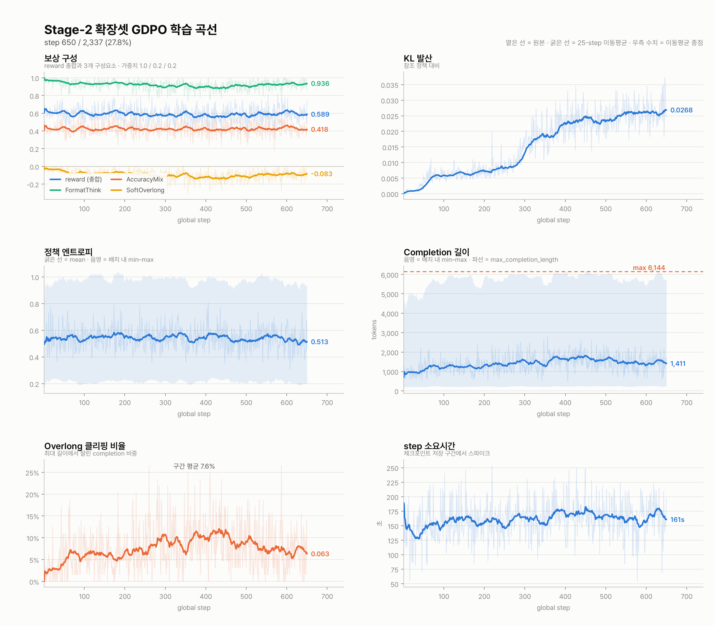
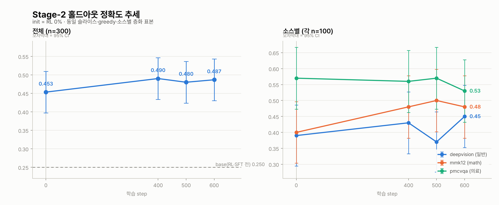
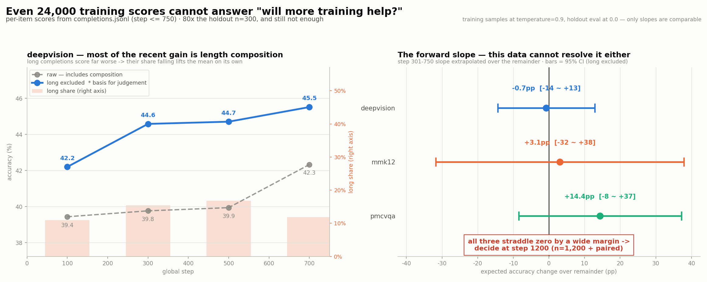
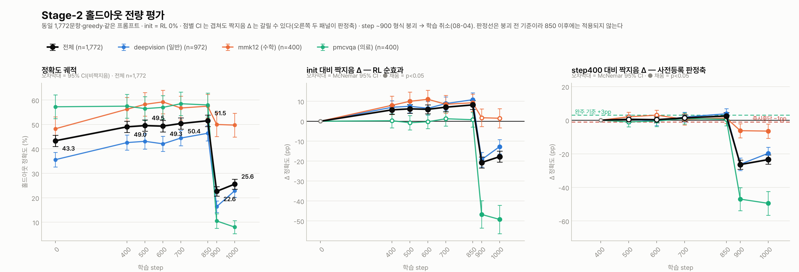
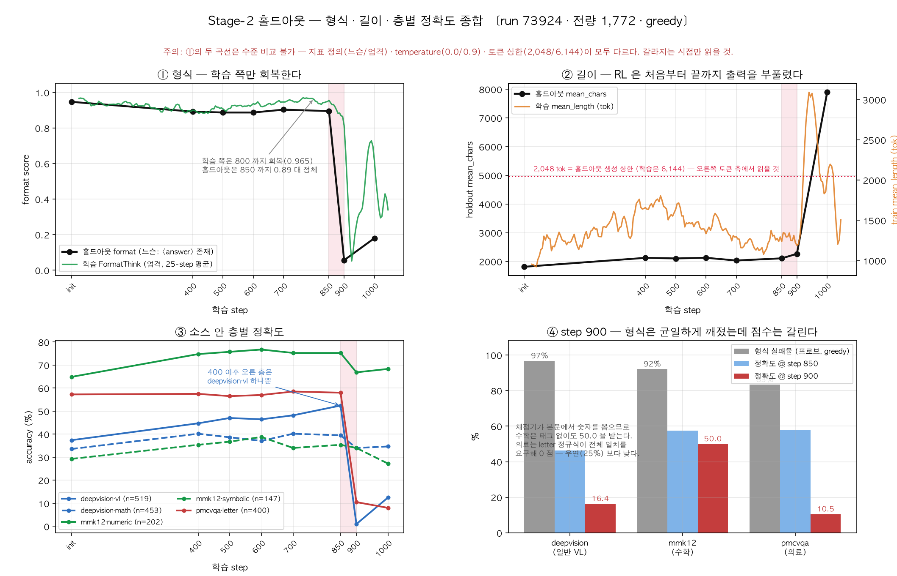

Stage-2 · 혼합 학습 (2-B) — 중간 점검과 형식 붕괴 사후 분석(job 73924/73925)
결론. 3소스 혼합 74,787건 GDPO 실행(job 73924 → 73925)은 step ~900 에서 형식 붕괴로 끝났다(2026-08-03 20:31 KST). 붕괴는 리워드 해킹이 아니다. 학습 보상이 0.615 에서 0.205 로 떨어졌으므로 최적화 실패다. 최고 체크포인트는 step 850 이다(홀드아웃 51.52%, init 대비 +8.18pp, p<0.0001). 붕괴 직전까지 학습은 개선 중이었다. 실패한 것은 안정성이다. 의료(pmcvqa)는 여섯 지점 모두 변화가 없었다. 붕괴는 13.6시간 뒤에 우연히 발견됐고, 147 step(≈109 GPU-h)을 낭비했다. 근인은 하나가 아니다: 모델(prior 밖 <answer> 층이 먼저 벗겨진다) · 하이퍼파라미터(epoch 산식 오류로 LR 이 피크의 68%) · 데이터(훈련셋 43% 가 형식에 무관심, step 600 에 mix 46.5% 포화). 개시 원인(왜 step 800~900)은 아직 지목하지 못했다.
1부 · Stage-2 GDPO 학습 붕괴 사후분석 보고서
대상 job 73924 (2026-07-31 09:48 ~ 08-03 07:40) + job 73925 (08-03 07:48 ~ 08-04 10:14)
작성 2026-08-05 · 개정 2026-08-06 (rev.2) · 근거 logs/grpo_adv_7392[45].log, logs/train_metrics.csv, logs/eval_*_{results,items}_*.jsonl, logs/probe_fragility_results.jsonl, ms-swift 소스 판독
🚨 rev.2 변경 요약 (2026-08-06) — 클러스터 접근이 열려 ms-swift gdpo 구현을 직접 읽은 결과:
- §4-2(a) 초판 주장 철회. "GDPO 가 형식 복원력을 2.3배 증폭" 은 틀렸다. 실제 재가중은 ±15% 로 무시할 수준.
- §4-2(a-2) §8-i ④ 의 '그룹 균일성 함정' 은 GDPO 고유 문제가 아니다 —
none도 동일하게 A=0. - §4-4 인과 순서 정정. 길이 폭주는 형식 붕괴의 원인이 아니라 10 step 뒤의 결과.
overlong_filter는 2단계가 아니라 3단계(회복 저지). - §1-5-1 신규.
kl이 형식 지표보다 50 step 먼저 움직인다 → 두 번째 경보선.
이 문서는 점검 보고서다. 진행 기록은 22_stage2b_mixed_run.html (이 문서의 2부),
폭주 기전의 상세 규명은 그 문서 §8-i 에 있다. 여기서는 세 가지에 답한다 —
① 어떻게 발견했나 ② 실제로 무엇이 들어갔나 ③ 실제로 어떤 파라미터였나, 그리고 ④ 원인 식별.
각 항목에 근거 등급을 붙인다: ✅ 로그로 검증 · ⚠️ 추론(반증 가능) · ❓ 미확인
0. 요약
| 내용 | |
|---|---|
| 무슨 일 | step ~900 에서 출력 형식(<answer> 태그)이 5 step 만에 붕괴, 이후 정책 자유낙하 |
| 언제 | 2026-08-03 20:31 KST (job 73925 +12h42m) |
| 언제 알았나 | 2026-08-04 ~10:00 KST — 붕괴 13.6시간 뒤, 재시작 파라미터를 정하려다 우연히 |
| 낭비 | 147 step · 13.6 node-h ≈ 109 GPU-h 를 붕괴 이후에 태움 |
| 최고 체크포인트 | step 850 (홀드아웃 51.52%, init 대비 +8.18pp p<0.0001) — 붕괴 4h17m 전 저장 |
| 아슬아슬했던 것 | save_total_limit=5 로 checkpoint-850 은 step 1100 에서 자동 삭제될 예정이었다. 남은 여유 53 step ≈ 4.9h |
| 성격 | 리워드 해킹이 아니다. 학습 보상 자체가 0.615 → 0.205 로 무너졌다 → 최적화 실패 |
| 근인 | 단일 원인 없음. 모델(무엇이 먼저 깨지나) · 하이퍼파라미터(왜 절벽인가) · 데이터(왜 안 멈췄나) 세 축의 합 |
| 개시 원인 | ❓ 여전히 미지목. 세 축 어느 것도 "왜 하필 step 800~900" 은 못 짚는다 |
1. 발견 경위 — 세 감시 축이 각각 무엇을 놓쳤나
1-1. 우리가 보고 있던 것
붕괴 시점에 가동 중이던 감시는 셋이었다.
| # | 감시 축 | 주기 | 붕괴를 잡았나 | 왜 못 잡았나 |
|---|---|---|---|---|
| ① | 홀드아웃 정확도 (eval_midtrain) |
수동, 며칠 단위 | ❌ | step 700 까지만 평가돼 있었다. 850·900·1000 은 붕괴를 안 뒤에 소급 측정한 것 |
| ② | 학습 곡선 플롯 (plot_train_curves.py) |
수동 | ❌ | 마지막 갱신이 step 800 시점. 그 표는 "형식 0.958, 클리핑 3.9%, 엔트로피 정상" 으로 건강했다 |
| ③ | watch_and_eval.sh (목표 step 자동 감시) |
08-04 09:07 도입 | ❌ | 붕괴 12시간 뒤에 만들었다. 감시 대상도 "step 1200 도달" 이었지 이상 탐지가 아니었다 |
셋 다 "정해진 지점에 도달했는가"를 보는 장치였고, "지금 정상인가"를 보는 장치는 없었다.
1-2. 실제 발견 순간
원문(§8): "발견 경위가 중요하다 — 홀드아웃 추세(§6-d)만 보고 있었으면 못 봤다.
재시작 파라미터를 정하려고 학습 로그의 frac_reward_zero_std 를 확인하다가 인접 지표에서 드러났다."
즉 탐지가 아니라 사고(事故)에 가깝다. 08-04 오전에 §6-d(홀드아웃 전량 재측정)를 마치고
"step 1200 판정 전에 파라미터를 손볼까" 를 검토하며 CSV 를 열었는데, frac_reward_zero_std
옆 칸의 rewards/FormatThink/mean 이 0.05 를 찍고 있었다.
1-3. 시간선 ✅
| 시각 (KST) | step | 사건 |
|---|---|---|
| 07-31 09:25 | — | 체인 제출 73920~73923 — 네 잡 모두 602 byte 로 즉사(run_py 진입 전). 재제출 |
| 07-31 09:48 | 1 | job 73924 시작 (v0-20260731-094532) |
| 08-02 20:38 | ~650 | 첫 중간 홀드아웃(n=300, job 74060) — "판정 불가" |
| 08-02 21:17 | ~650 | ⚠️ "step 400 포화" 오판독 문서화 |
| 08-02 23:24 | — | 위 판독 철회 (판별불가로 재기술) |
| 08-03 07:40 | 787 | 73924 walltime(70h) 종료 |
| 08-03 07:48 | 751 | job 73925 시작 — checkpoint-750 에서 resume → v1-20260803-074645 ⚠️ 751~787 은 두 번 실행됨 (재현성은 확인됨: Format 0.973 vs 0.970) |
| 08-03 10:01 | — | 학습로그 소스별 추세 판독도 철회 |
| 08-03 16:14 | 850 | 최고 체크포인트 저장 (홀드아웃 51.52%) |
| 08-03 ~16:20 | 851 | 🔔 설계된 조기경보(비절단 형식실패 1%)라면 여기서 울렸다 — 붕괴 4h11m 전 |
| 08-03 20:31 | 900 | 🚨 붕괴. FormatThink 899:0.547 → 900:0.359 → 902:0.062 → 904:0.016 |
| 08-03 ~22:00 | ~910 | 2단계 시작 — 길이 폭발 (1,394 → 3,284 tok) |
| 08-04 09:07 | ~1040 | watch_and_eval.sh 도입 (붕괴를 아직 모름) |
| 08-04 ~10:00 | 1046 | 🔍 발견 — 재시작 파라미터 검토 중 FormatThink=0.05 목격 |
| 08-04 10:13:57 | 1047 | 체인 취소 (73925·73926·73927) |
| 08-04 12:12 | — | step 900 홀드아웃 완료 → 절벽이 850~900 사이 50 step 임을 확정 |
붕괴 → 발견 = 13시간 35분. 그 사이 147 step = 13.6 node-h ≈ 109 GPU-h 를 태웠다.
1-4. 점검에서 새로 드러난 것 — 체크포인트가 5시간 차이로 살았다 ✅
save_steps=50 · save_total_limit=5 → 보존 창 = 250 step
job 73925 (v1) 의 저장 이력: 800, 850, 900, 950, 1000 ← 취소 시점에 정확히 5개
step 1050 저장 시 checkpoint-800 이, step 1100 저장 시 checkpoint-850(최고점)이 삭제된다. 취소 시점 step 1047 → 여유 53 step ≈ 4.9시간.
🚨 붕괴를 반나절만 더 늦게 알았으면 최고 체크포인트를 잃었다. 살아남은 건 우연이다. v0(≤750)은 별도 디렉터리라 안전했으나, 살릴 가치가 있던 건 850 이었다.
1-5. 감시 설계의 결론
| 문제 | 조치 |
|---|---|
| "지금 정상인가"를 보는 장치가 없었다 | ✅ 구현됨 — scripts/watch_format_collapse.py. FormatThink 50-step 창평균 < 0.85 시 자동 정지 |
| 붕괴 후에도 계속 돌았다 | ✅ 위 감시자가 scancel 까지 한다 (WATCHDOG=1 로 활성). 로그 재생 검증: step 901 발화 · 1,047 step 전 구간 오경보 0회 · 실제 발견보다 146 step(13.5h) 빠름 |
| 최고 체크포인트가 삭제 위험에 노출됐다 | save_total_limit 상향, 또는 홀드아웃 최고점 갱신 시 별도 디렉터리로 즉시 스냅샷 |
| 붕괴를 알고도 소급 평가에 하루가 들었다 | 체크포인트 저장 시 자동 홀드아웃 서브셋 평가(n=300 이면 20분) |
1-5-1. ✅ 추가 (2026-08-06) — KL 이 형식보다 50 step 먼저 움직였다
CSV 구간평균을 다시 뜨니, 형식 지표가 아직 건강할 때 KL 과 grad_norm 이 먼저 올라간다:
| 구간 | kl |
grad_norm |
FormatThink |
길이 | clipped_ratio |
|---|---|---|---|---|---|
| 700–849 | 0.031 | 0.020 | 0.95 | 1,200 | 0.04 |
| 850–874 | 0.036 (+15%) | 0.022 | 0.90 | 1,303 | 0.06 |
| 875–889 | 0.049 (+56%) | 0.028 (+40%) | 0.86 | 1,322 | 0.05 |
| 890–899 | 0.074 (+137%) | 0.053 (+165%) | 0.80 | 1,062 | 0.04 |
| 900–909 | 0.081 | 0.063 | 0.081 ← 붕괴 | 1,376 | 0.08 |
| 910–949 | 0.068 ⚠️ | 0.324 | 0.213 | 3,010 | 0.35 |
KL 은 step 850 부터 2.4배로 오르는 동안 FormatThink 은 0.90 을 유지한다.
🚨 정정 (2026-08-06, 같은 날 재검증) — 위 관찰은 맞지만, 실행 가능한 경보로는 쓸 수 없다.
scripts/watch_format_collapse.py --simulate 로 73924/73925 로그를 온라인 규칙으로 재생해
임계값을 스윕한 결과, 오경보 없는 KL 규칙의 리드타임은 1 step 이었다:
kl-ratio (직전 150-step 중앙값 대비) |
발화 step | 판정 |
|---|---|---|
| 1.4 ~ 1.9 | 288 ~ 301 | ❌ 오경보 (붕괴 600 step 전) |
| 2.0 | 900 | 형식 경보(901)보다 1 step 빠름 |
| 2.5 | 미발화 | ❌ 놓침 |
구간평균 비교(위 표)로는 50 step 선행처럼 보이지만, 이는 사후에 구간 경계를 알고 나눈 결과다. 앞을 모르는 온라인 규칙에서는 그 여유가 실현되지 않는다. ⇒ KL 은 경보선이 아니라 사후 해석용 지표로만 쓴다. 감시는 형식 지표 단독으로 건다.
⚠️ 함정 — 910–949 의 KL 하락(0.081 → 0.068)은 개선이 아니라 계측 실패다.
overlong_filter 가 절단 롤아웃을 completion_mask 에서 빼는 코드가 KL 계산보다 앞줄에 있다
(grpo_trainer.py:1132 → KL 은 1140 행, 코드 원문 → 2부 §8-d). 이 구간 clip 이 0.35 이므로
KL 은 남은 65% 토큰에서만 측정된다. 즉 절단이 늘수록 KL 경보가 둔해진다 — 가장 필요할 때.
⇒ KL 감시는 반드시 clipped_ratio 와 함께 읽어야 한다.
⚠️ 절대값 임계로 걸면 안 된다. 로그축으로 그려 보면(docs/assets/stage2_expanded_73924_curves.png
우상단 패널) KL 은 런 내내 단조 상승한다 — step 1 의 6e-4 에서 step 800 의 3e-2 까지 50배,
그동안 아무 문제도 없었다. 경보를 걸 지점은 평탄구간의 이탈이다:
step 700~849 에서 0.031 로 150 step 평탄하다가 850~899 에 +137% 로 꺾인다.
⇒ 규칙은 "KL > X" 가 아니라 "직전 150-step 중앙값 대비 2배 초과" 여야 한다.
❌ 쓰지 말 것: rewards/FormatThink/std.
이진 보상의 배치 std 는 평균의 결정론적 함수(√(p(1−p)·n/(n−1)))라
"평균이 떨어지기 전에 std 가 먼저 뛴다"처럼 보이는 것은 산술적 착시다. 독립 정보가 없다.
2. 실제로 무엇이 들어갔나 — 데이터 점검
2-1. 로그로 확인된 것 ✅
--dataset /home01/k252a02/kbds_project/work/data/stage2_expanded_train.jsonl
[INFO:swift] train_dataset: Dataset({ features: ['messages','images','solution'], num_rows: 74787 })
[INFO:swift] val_dataset: None
dataset_shuffle=True · seed=42 · split_dataset_ratio=0.0
- 74,787 행 전량 로드. 드롭·필터·길이초과 경고 0건 (로그 전수 grep).
- 시스템 프롬프트는 전역 하나이고 커맨드에 그대로 박혀 있다 — 소스별 지시문 충돌 없음.
- 프롬프트 안 형식 지시는 사실상 0 (§8-i ①: deepvision 0.5%, mmk12·pmcvqa 0.0%).
설계 구성:
| 소스 | 건수 | 비중 | 정답 형식 | 홀드아웃 |
|---|---|---|---|---|
| DeepVision (서브샘플) | 40,000 | 53.5% | letter 49.5 / int 27.8 / 수식 11.5 | 972 |
| MMK12 (전량) | 15,204 | 20.3% | int 46.5 / 수식 26.2 (math_verify 82%) | 400 |
| PMC-VQA (서브샘플) | 19,583 | 26.2% | letter 100% (4지선다) | 400 |
| 합계 | 74,787 | 1,772 |
이미지 바이트해시 dedup 검증 완료 — 홀드아웃 누수 0.
2-2. 설계 비율과 실측 롤아웃 비율이 다르다 ❓ (미해결)
| deepvision | mmk12 | pmcvqa | |
|---|---|---|---|
| 설계 (코퍼스) | 53.5% | 20.3% | 26.2% |
| 실측 (롤아웃 34,688건 조인, §8-i ⑥) | 65% | 16% | 18% |
| 차이 | +11.5pp (+21%) | −4.3pp (−21%) | −8.2pp (−31%) |
§8-i ⑥ 은 이 비율이 전 구간 안정적(±3%p)임을 확인하고 "구성 편중" 가설을 기각했다. 맞는 기각이다 — 시간에 따라 변하지 않았다. 그러나 설계값과 대조하지는 않았다.
§4 의 전제가 "비율만 중요하다"였으므로 이 11pp 차이는 그냥 넘어갈 수 없다. 의료가 26% → 18% 로 3분의 1 가까이 줄어든 채 돌았다면, "의료 27% 배합" 이라는 설계는 실현되지 않았다.
원인 후보 (미확인):
dynamic_sample재샘플링 편향- 조인 키(프롬프트 앞 150자) 귀속 오류 — 문서는 오염 0.03% 라 하나 소스별 조인 성공률은 안 봤다.
log_completions기록 자체의 편향.
점검 항목 (재시작 전 필수): completions.jsonl 을 소스별 조인 성공률과 함께 다시 세고,
설계 53/20/26 과 대조할 것. 1 줄 확인으로 끝나며, 여기가 어긋나 있으면 이후 배합 논의가 전부 무의미하다.
2-3. 정답 형식 구성이 채점 구멍의 크기를 정한다 ✅
§8-i ② 가 밝힌 구멍 — _strip_answer 는 <answer> 가 없으면 완성문 전체를 답으로 넘긴다
(코드 원문 configs/accuracy.py → 2부 §8-i ②, 주석 "태그 없으면 전문").
여기에 훈련셋의 정답 형식 구성을 곱하면 구멍의 크기가 나온다:
| 채점 경로 | 태그를 버리면 | 해당 데이터 | 훈련셋 비중 |
|---|---|---|---|
math_verify(전문, first_match) |
본문 어디서든 숫자·\boxed{} 를 찾음 → 통과 |
mmk12 전량 + deepvision 43% | 43.3% |
_LETTER_RE (문자열 전체가 letter 한 글자) |
추론문은 절대 매치 안 됨 → 0점 | pmcvqa 전량 + deepvision 49.5% | 52.7% |
즉 훈련셋의 43%에서 그래디언트가 <answer> 태그에 무관심하다.
§8-i ② 는 구멍의 존재를, 여기서는 그 면적을 말한다 — 희귀 엣지케이스가 아니라 코퍼스의 절반이다.
실측(step 800~899 비절단 롤아웃): 형식을 버린 짧은 롤아웃의 29.2% 가 정답 처리됐다.
2-4. 소스별 학습 신호 — step 600 에 절반이 이미 포화 ✅
홀드아웃 전량(n=1,772) 짝지음:
단일 사본 표. 2부 §6-d(init~700, 측정 job 74187·74137·74188·74189·74190)와 §8-f(850·900·1000)의 홀드아웃 표를 여기 하나로 합쳤다. 900·1000 열은 붕괴 이후 값이다. 판정 열은 step 850 까지를 본 사후분석의 판정이다.
| (%) | init(RL 0%) | 400 | 500 | 600 | 700 | 850 | 900 | 1000 | 판정 (~850) |
|---|---|---|---|---|---|---|---|---|---|
| 전체 (n=1,772) | 43.34 | 49.04 | 49.55 | 49.32 | 50.40 | 51.52 | 22.63 | 25.56 | — |
| deepvision 일반 (n=972) | 35.60 | 42.59 | 43.11 | 42.08 | 44.44 | 46.40 | 16.36 | 22.84 | 유일하게 계속 상승 |
| mmk12 수학 (n=400) | 48.25 | 56.25 | 58.25 | 59.25 | 56.75 | 57.50 | 50.00 | 49.75 | 600 정점, 이후 하락 |
| pmcvqa 의료 (n=400) | 57.25 | 57.50 | 56.50 | 57.00 | 58.50 | 58.00 | 10.50 | 8.00 | 전 지점 미검출(±3.5pp) |
| format | 0.947 | 0.892 | 0.887 | 0.887 | 0.903 | 0.895 | 0.056 | 0.180 | |
| mean_chars | 1,812 | 2,124 | 2,103 | 2,126 | 2,031 | 2,107 | 2,264 | 7,893 |
소스 안 층별로 더 쪼개면 400 이후의 이득은 deepvision·vl 하나에서 전부 나온다:
| 층 (400→850) | Δ |
|---|---|
| deepvision·vl | +7.71pp |
| deepvision·math | −0.67pp |
| mmk12·numeric | (600 정점 후 하락) |
| pmcvqa·letter | +0.50pp (미검출) |
step 600 이후 mix 의 46.5%(mmk12+pmcvqa)에는 가르칠 것이 남아 있지 않았다.
2-5. ⚠️ 왜 의료는 처음부터 안 올랐나 — 파라미터 점검에서 나온 가설
freeze_vit=True · freeze_aligner=True · freeze_llm=False
LoRA target: ^(model\.language_model(?=\.)\..*\.(q_proj|k_proj|v_proj|o_proj|gate_proj|up_proj|down_proj|...))$
비전 인코더와 aligner 는 완전 동결이었다. LoRA 는 언어모델에만 붙었다. ✅
PMC-VQA 는 PubMed 그림(현미경·조영술·다중패널 도표)이다. 이 도메인에서 Qwen3.5 ViT 의 표현이 부실하다면, 언어 쪽 어댑터를 아무리 돌려도 오를 수 없다 — RL 이 건드릴 수 있는 건 "고정된 시각 토큰을 어떻게 읽을까"뿐이다.
이는 §8-f 의 관측과 정합적이다:
- 상승한 유일한 층 = deepvision·vl (일반 도형·차트 — ViT 가 이미 잘 보는 것)
- 무반응 = pmcvqa (의료 영상 — ViT 가 못 보는 것)
⚠️ 가설이다. 반증 방법: freeze_vit=False 또는 visual 모듈에 LoRA 를 붙여 400 step 만 재실행하고
pmcvqa 홀드아웃을 재보자. 지금 데이터로는 "ViT 가 부실해서"와 "PMC-VQA 가 원래 RL 로 안 오르는 과제라서"를 구분 못 한다.
어느 쪽이든 운영상 결론은 같다: 의료 26%는 그래디언트 잡음만 내면서 GPU 시간의 4분의 1을 썼다. 그리고 §8-i ② 에 따르면 pmcvqa 는 step 899 까지 형식 실패율이 정확히 0.0% 였다 — 형식을 붙들고 있던 유일한 소스가, 학습 신호가 없는 소스였다.
3. 실제로 어떤 파라미터로 돌았나 — 전량 점검
3-1. 실행 커맨드 원문 ✅
logs/grpo_adv_73924.log 9행에서 그대로 옮긴 것이다(경로 축약).
swift rlhf --rlhf_type grpo --model .../sft_mixed_merged --model_type qwen3_5
--system "You are a multimodal reasoning assistant. ... INSIDE <think> </think> ...
Then give ONLY the final answer INSIDE <answer> </answer>. ..."
--dataset .../stage2_expanded_train.jsonl
--tuner_type lora --lora_rank 16 --lora_alpha 32 --target_modules all-linear
--external_plugins configs/accuracy.py
--reward_funcs accuracy_mix format_think soft_overlong --reward_weights 1.0 0.2 0.2
--soft_max_length 6144 --soft_cache_length 2048
--dynamic_sample true --max_resample_times 3 --overlong_filter true
--loss_type dr_grpo --importance_sampling_level token --epsilon 0.2 --scale_rewards gdpo
--enable_thinking true --num_generations 4 --temperature 0.9 --max_completion_length 6144
--per_device_train_batch_size 1 --gradient_accumulation_steps 4
--learning_rate 1e-5 --beta 0.04 --max_length 10240 --max_pixels 1003520
--use_vllm true --vllm_mode colocate --vllm_gpu_memory_utilization 0.4 --sleep_level 1
--save_strategy steps --save_steps 50 --save_total_limit 5 --logging_steps 1
--max_steps 2337
73925(재개)도 --resume_from_checkpoint .../checkpoint-750 하나만 추가되고 나머지는 완전 동일. ✅
의도한 레시피대로 돌았다 — SLURM --export 파싱 사고나 인자 유실은 없었다.
3-2. 해소된 인자 중 점검에서 새로 드러난 것
swift 가 덤프한 전체 인자에서, launch 스크립트에 안 적혀 있어 아무도 안 본 것들이다.
| 인자 | 값 | 출처 | 평가 |
|---|---|---|---|
warmup_steps / warmup_ratio |
0 / None | 기본값 | ⚠️ 워밍업 없음. step 1 부터 LR 1e-5 전개. 초기는 무사했으므로 붕괴 원인은 아니나 의도한 적 없다 |
lr_scheduler_type |
cosine |
기본값 | ✅ — 단 감쇠 지평이 max_steps=2337. §3-4 참조 |
max_grad_norm |
1.0 | 기본값 | ✅ 설정돼 있었다. 실제 발동은 §3-3 |
weight_decay |
0.1 | swift 기본 | ✅ 무해. LoRA δ=0 이 곧 SFT init 이므로 wd 는 SFT 쪽으로 당긴다 — 형식을 지키는 방향 |
sync_ref_model |
False | 기본값 | ✅ 참조모델이 SFT init 에 고정. 따라서 KL 0.54 는 init 기준 이탈량이고 β=0.04 가 유일한 고삐였다 |
num_iterations |
1 | 기본값 | ✅ 완전 on-policy, 내부 반복 없음 — staleness 없음 |
top_p / top_k |
1.0 / −1 | 기본값 | ⚠️ 롤아웃 분포에 하한 절단이 없다. IS 편향 없애려면 옳으나, 퇴화 토큰도 항상 도달 가능 |
epsilon_high |
None | dr_grpo 의도 | ✅ 대칭 clip 0.2 (clip-higher 미적용) |
freeze_vit / freeze_aligner |
True / True | 기본값 | 🚨 비전 경로 완전 동결. §2-5 의 근거 |
lora_dropout |
0.05 | 기본값 | — |
adam_beta2 |
0.95 | swift 기본 | — (HF 기본 0.999 보다 짧은 기억) |
dataset_shuffle / seed |
True / 42 | ✅ 순서 artifact 없음 | |
save_total_limit |
5 | 스크립트 | 🚨 §1-4 — 최고 체크포인트가 4.9h 차이로 살았다 |
3-3. max_grad_norm — 문서 정정 ✅
§8-e 는 "max_grad_norm 은 1.0 으로 설정돼 있으나 실제 grad_norm 최대가 0.17 이라 한 번도 작동하지 않았다" 고 적었다.
step 933 까지는 맞다 (최대 0.1747 @ step 903). 그러나 전 구간 최대는 10.02 다.
| step | grad_norm | 시점 |
|---|---|---|
| 903 | 0.175 | 붕괴 중 (≤933 최대) |
| 938 | 10.02 | 붕괴 후 길이 폭발 |
| 1034 | 3.813 | 토큰 퇴화 |
| 1042 | 1.094 | 토큰 퇴화 |
→ 클리핑은 붕괴 이후 최소 3회 발동했다. 인과는 안 바뀌지만 문장은 정정해야 한다.
그리고 개시 시점의 grad_norm 은 정상이었다:
step 899:0.034 900:0.034 901:0.059 902:0.027 903:0.175 904:0.040
→ "한 스텝의 그래디언트 폭발" 가설은 이것으로 기각된다. ✅
3-4. LR 스케줄이 계획 오류를 물려받았다 🚨 (신규)
launch_stage2_expanded_epoch.sh 는 1 epoch 을 2,337 step 으로 산정했다. 이는 틀렸다
(2부 §3: GRPO 의 pdtbs 는 프롬프트가 아니라 completion 을 센다 → 실제 1 epoch = 9,348 step, 2,337 은 0.25 epoch).
이미 알려진 오류지만, 그 오류가 LR 스케줄로 새어 나간 것은 기록된 적이 없다:
lr_scheduler_type=cosine · max_steps=2337 → 붕괴 시점 step 900 의 LR = 6.77e-6 = 피크의 68%
그런데 같은 시점의 홀드아웃 이득은(짝지음 Δ — 표 원본은 2부 §6-d 짝지음 판정 · §8-g): init → 400 +5.70pp ✅ p<0.0001 · 400 → 850 (450 step) +2.48pp ✅ p=0.020 (겨우) · 700 → 850 (150 step) +1.13pp ❌ 미검출 p=0.25.
포화된 목적함수에 피크의 68% LR 을 200 step 넘게 더 먹였다.
MAX_STEPS 를 1,200 으로 잡았다면 step 900 의 LR 은 ~3e-6 (30%)였다.
epoch 산식 오류 → MAX_STEPS=2337 → cosine 감쇠 지평 → 붕괴 구간의 과대 LR.
계획 오류가 안정성 사고로 연결되는 경로다.
3-5. 검증 지평 밖에서 돌았다 🚨
| GDPO A/B (job 59191) | 본 실행 (73924) | |
|---|---|---|
| 데이터 | DeepVision 단독 | 3소스 혼합 (신규) |
| 도달 step | 600 | 1,047 (붕괴 900) |
| 판정 | 홀드아웃 0.390 vs dr_grpo 0.380 → 동률 | — |
채택한 레시피(scale_rewards=gdpo)는 붕괴가 일어난 영역에서 검증된 적이 없다.
그리고 A/B 결과가 "동률"이었다는 것은 곧 검증 승자인 dr_grpo(=scale_rewards=none)로 갔어도 잃을 게 없었다는 뜻이다.
3-6. overlong_filter 의 실제 발동량 ✅ (신규 정량)
All completions are overlong and truncated — 배치 전체가 잘려 손실 마스크가 전부 0 이 되는 경고다.
| step 창 | 발생 | 비고 |
|---|---|---|
| 400–499 | 48 | 1차 길이 인플레이션 정점 |
| 650–799 | 12 | 회복 구간 |
| 800–849 | 5 | |
| 850–899 | 10 | ⚠️ 2배로 증가 — 절벽 직전 |
| 900–949 | 52 | 🚨 5.2배 급증 |
| 950–999 | 38 | |
| 1000–1049 | 28 |
step 900–949 는 50 step × 8 rank = 400 rank-step 중 52건(13%) 에서 배치 전체가 마스킹됐다 — 그 rank·step 은 손실도 KL 앵커도 기여하지 않았다. §8-d 의 "앵커 무력화"가 처음으로 정량화된 자리다.
정정 ✅: 2부 §2 의 "해당 step 은 KL 이 NaN 이라 그 구간의 KL 제약이 사실상 무효였다" 는
재현되지 않는다. 두 잡의 로그 전수 검사에서 'kl': 'nan' 은 0건이고,
train_metrics.csv 1,047 행 어디에도 NaN/결측이 없다. 마스킹은 실재하나 NaN 으로는 나타나지 않았다.
4. 원인 식별
4-0. 프레임 정정 — 리워드 해킹이 아니다 ✅
| 구간 | reward | AccuracyMix | FormatThink |
|---|---|---|---|
| 800–850 | 0.615 | 0.438 | 0.944 |
| 875–900 | 0.578 | 0.428 | 0.814 |
| 900–925 | 0.205 | 0.244 | 0.052 |
모델은 보상이 더 낮은 영역으로 갔고 돌아오지 못했다. §8-i ② 의 채점 구멍은 형식 붕괴가 퍼져나갈 통로였지 목적지가 아니었다. 따라서 "보상 설계를 고치면 된다"는 절반만 맞다 — 나머지 절반은 왜 최적화가 더 나쁜 곳으로 굴러가서 못 돌아왔는가이고, 이것이 세 축의 질문이다.
4-1. 모델 축 — 무엇이 먼저 깨지나 ⚠️
세 태그를 한 덩어리 "형식"으로 봤지만, 출신이 다르다.
| 태그 | 출처 | 모델이 생성하나 |
|---|---|---|
<think> |
템플릿이 프롬프트에 주입 (enable_thinking=true) |
❌ 공짜 |
</think> |
Qwen3.5 하이브리드 씽킹의 네이티브 프로토콜 | ✅ 사전학습 prior |
<answer>…</answer> |
콜드스타트 SFT + 시스템 프롬프트로 덧씌운 층 | ✅ prior 밖 |
checkpoint-900 greedy 실측이 정확히 이 순서로 벗겨진다 (비절단 형식실패 171건):
</think> ✓ <answer> ✗ 143건 83.6% ← 덧씌운 층만 탈락
</think> ✗ <answer> ✗ 28건 16.4% ← 둘 다 탈락
`Answer:` 로 종결 8건 4.7%
붕괴는 "형식을 잊었다"가 아니라 prior 밖의 층부터 순서대로 벗겨진 것이다. LoRA rank 16 이라 그 층은 통째로 어댑터 델타 안에만 살고 base weight 엔 흔적이 없다 — 붙들어줄 관성이 구조적으로 없다.
대표 사례 (pmcvqa, 같은 프롬프트):
step 850 → ... corresponding to option A.\n</think>\n<answer>A</answer> ✅
step 900 → ... corresponding to option A.\n</think> ❌ 여기서 멈춤
정답을 알고, 말하고, 태그만 안 쓴다. letter 정규식은 문자열 전체가 한 글자일 것을 요구하므로 0점.
⚠️ Qwen3.5 사전학습에 <answer> 가 없다는 것은 직접 확인하지 않았다. 근거는 위 83.6/16.4 관측이다.
4-2. 하이퍼파라미터 축 — 왜 절벽인가 ⚠️
(a) GDPO 는 대체로 무죄다 — 초판 주장 철회 ✅ (2026-08-06 구현 확인)
🚨 초판(2026-08-05)의 "GDPO 가 형식 복원력을 2.3배 증폭해 쌍안정을 날카롭게 깎았다" 는 주장을 철회한다. 구현을 직접 읽고 계산하니 틀렸다. 아래가 정정본이다.
swift/rlhf_trainers/grpo_trainer.py:556 실측:
elif self.scale_rewards == 'gdpo':
grouped = rewards_per_func.view(-1, K, n_func)
group_std = nanstd(grouped, dim=1, keepdim=True) # ← Bessel 보정 (ddof=1)
normalized = (grouped - group_mean) / (group_std + 1e-8)
normalized = torch.nan_to_num(normalized, nan=0.0)
advantages = (normalized * self.reward_weights).sum(dim=1)
batch_std = advantages.std() + 1e-8
advantages = (advantages - advantages.mean()) / batch_std # ← 배치 전역 whitening
reward_funcs=['accuracy_mix','format_think','soft_overlong'], reward_weights=[1.0, 0.2, 0.2],
kl_in_reward=False(gdpo 강제 비활성 경고 0회 — 원래 False 였다).
초판의 오류 두 가지:
- 표준편차 규약을 틀렸다.
nanstd는 Bessel 보정(ddof=1) 을 쓴다(utils.py:209). 초판은 모집단 std 로 σ=0.433/0.500 을 썼으나, K=4 이진 보상의 실제 σ 는 3:1 → 0.500, 2:2 → 0.577 이다. - 마지막 줄의 배치 전역 whitening 을 놓쳤다. 어드밴티지 벡터 전체가 배치 단위로 재정규화되므로 "gdpo 가 절대 크기를 키운다"는 명제 자체가 성립하지 않는다. 살아남는 것은 샘플 내부의 상대 비율뿐이다.
정정된 계산 — gdpo 가 바꾸는 것은 형식:정확도 기여 비율이고, 그 배수는 정확히 σ_acc / σ_fmt 다:
| 형식 σ / 정확도 σ | 재가중 배수 |
|---|---|
| 0.500 / 0.577 (형식 3:1, 정확도 2:2) | 1.155× |
| 동일 분포 | 1.000× |
| 0.577 / 0.500 | 0.866× |
AccuracyMix·FormatThink 는 둘 다 0.0/1.0 이진이므로(configs/accuracy.py:65-119) K=4 에서 σ 는
{0, 0.500, 0.577} 세 값만 가진다. 따라서 gdpo 의 형식 재가중은 최대 ±15% 다. 2.3배가 아니다.
(a-2) §8-i ④ '그룹 균일성 함정' 도 GDPO 고유 문제가 아니다 ✅
4개 롤아웃이 전원 형식 위반이면 (r − r̄) = 0 이므로 none 에서도 형식 기여가 정확히 0 이다.
gdpo 는 여기에 0/(0+1e-8) = 0 을 더할 뿐이다.
이것은 그룹 중심화를 쓰는 GRPO 계열 전체의 성질이지 scale_rewards 선택의 책임이 아니다.
§8-i ④ 의 실측(전원 F=0 그룹 0.0% → 0.6% → 31.4%, 그 안의 비절단 advantage +0.143)은 그대로 유효하지만,
그 원인을 GDPO 로 돌리면 안 된다. none 으로 돌렸어도 같은 함정이 있었다.
(a-3) GDPO 의 실제 고유 취약점 — 다만 이번 붕괴의 방아쇠는 아니다 ⚠️
세 보상 중 soft_overlong 만 연속값(0 ~ −1)이다. 여기서만 gdpo 와 none 이 질적으로 갈린다.
1e-8(gdpo) 대 1e-4(group 경로)의 차이 때문에 감쇠도 사실상 없다.
gdpo 는 길이 페널티를 척도 불변으로 만든다 — 1 토큰 초과나 2,000 토큰 초과나 z 는 똑같이 −1.5 다.
none 에서는 초과량에 비례해 작아지는데, gdpo 에서는 그렇지 않다.
그 결과 정보량이 다른 그룹들이 같은 그래디언트 가중을 받는다.
세 그룹 유형으로 정확히 계산했다(가중 [1.0, 0.2, 0.2], ddof=1, batch whitening 전):
| 그룹 | 구성 | none advantage |
gdpo advantage |
B 대비 상대 가중 |
|---|---|---|---|---|
| A | 형식 전원 0, 정확도 전원 0, 1개 완전 절단(−1.0) | +.05 +.05 +.05 −.15 |
+.10 +.10 +.10 −.30 |
0.173 → 0.200 (1.15×) |
| B | 건강한 그룹, 정확도 2:2 | +.50 +.50 −.50 −.50 |
+.87 +.87 −.87 −.87 |
(기준) |
| C | A 와 같되 절단이 한계 초과(−0.02) | +.001 … −.003 |
+.10 +.10 +.10 −.30 |
0.0035 → 0.200 (57.7×) |
✅ 산식 역검증 성공. 그룹 A 의 gdpo 값 [+.10,+.10,+.10,−.30] 을 batch_std≈0.86 으로 나누면
§8-i ④ 에 기록된 실측 advantage [+0.12,+0.12,+0.12,−0.35] 와 정확히 일치한다.
위 구현 판독이 맞다는 독립 확인이다.
결론 — 취약점은 C 유형에만 있다. 한계 초과 그룹에서는 gdpo 가 무의미한 길이 흔들림을 정상 그룹의 57.7배 가중으로 승격시킨다. 이것은 실재하는 설계 결함이고 기록해 둘 가치가 있다.
그러나 이번 붕괴의 방아쇠는 아니다. 두 가지가 반증한다:
- §8-i ④ 가 포착한 실제 병리 그룹은 A 유형(완전 절단 −1.0)이었다. 여기서 gdpo 의 기여는 +15% 뿐이다.
scale_rewards=none으로 돌렸어도 부호·구조가 똑같은+.05/+.05/+.05/−.15가 나왔다. "형식을 어긴 짧은 출력이 양수 advantage 를 받는다"는 병리는 레시피와 무관하게 발생했다. - 타이밍(§4-4·부록 B) — 길이·
SoftOverlong은 step 904 까지 완전히 정상이었고 (길이 629~1,465, clip 0.016~0.078), 길이 폭주는 형식 붕괴보다 10 step 뒤에 시작했다. 길이는 원인이 아니라 결과다.
(b) 표본 4개로 z-score 3개를 추정한다.
일반 GRPO 는 총합 std 하나만 필요하지만 GDPO 는 보상함수마다 std 를 따로 뽑는다.
num_generations=4 는 plain GRPO 기준의 메모리 절충값인데, GDPO 는 그보다 더 큰 그룹을 요구한다.
§8-i ⑤ 의 beta-binomial 외삽: 임계 구간(851~900)에서 죽은 그룹이 n=4 의 1.3~1.5% → n=8 에서 0.4%.
(c) LR 지평 — §3-4.
(d) overlong_filter 가 앵커를 무력화 — §3-6 · §8-d. step 900–949 에 rank-step 의 13%.
4-3. 데이터 축 — 왜 안 멈췄나 ✅
| 사실 | 결과 |
|---|---|
훈련셋 43.3% 에서 그래디언트가 <answer> 에 무관심 (§2-3) |
형식 이탈이 절반의 데이터에서 처벌받지 않는다 |
| 형식을 붙들던 유일한 소스(pmcvqa 26%)에 학습 신호가 없었다 (§2-4·2-5) | 나머지 74% 가 표류할 때 혼자 못 버텼다 |
| step 600 에 mix 의 46.5% 가 포화 (§2-4) | 남은 분산이 형식·길이 축뿐 |
| 그 위에 피크의 68% LR 이 200 step 더 (§3-4) | 형식 부분공간에서의 무작위 걷기 |
그 걷기의 흔적이 §8-i ⑧ 의 관측이다 — 비절단 형식실패율이 step 200~800 내내 0.0~0.4% 로 평평하다가 800 부터 50 step 마다 8~9배로 뛴다 (801~850 에 5.5% → 851~900 에 14.1%).
4-4. 인과 사슬 종합
[데이터] step 600 에 46.5% 포화 [하이퍼] MAX_STEPS 계획 오류 → LR 68%
└────────────┬────────────┘
▼
형식·길이 축에만 남은 분산에 과대 LR
▼
[모델] prior 밖의 <answer> 층이 가장 얇다 → 거기서 먼저 미끄러진다
▼
비절단 형식실패율 0.4% → 5.5% → 14.1% (step 800~900)
▼
[데이터] 43%에서 처벌 없음 + [GRPO 계열 공통] 전원실패 그룹은 중심화로 A=0
▼
🚨 전원 F=0 그룹 0.6% → 31.4% : 복원 그래디언트 소멸
▼
형식 붕괴 (step 899→904, 5 step) ── 1단계
▼
<answer> 종료 태그 소실 → 생성이 stop 조건을 잃고 상한까지 달림
▼
길이 폭발 (step 905~, 1,376 → 3,010 토큰) ── 2단계
▼
[하이퍼] overlong_filter: 잘린 롤아웃이 손실·KL 양쪽에서 제외 (rank-step 13%)
▼
유효 배치 축소 + KL 앵커 계측 불능 → 회복 실패, KL 0.03 → 0.38 ── 3단계
✅ 2026-08-06 정정 — 1·2단계의 순서를 실측으로 확정했다.
초판은 overlong_filter 를 형식 붕괴 직후의 원인으로 놓았으나, CSV per-step 추적 결과
형식 붕괴(899→904) 시점의 길이·clip 은 완전히 정상이었다(길이 629~1,465, clip 0.016~0.078).
길이 폭주는 step 905 부터 시작한다. 즉 overlong_filter 는 붕괴를 일으킨 것이 아니라
붕괴 후 회복을 막은 3단계 요인이다. 인과 방향이 한 칸 뒤로 밀렸다.
4-5. 각 축이 답하는 것 / 답 못 하는 것
| 축 | 답하는 질문 | 답 |
|---|---|---|
| 모델 | 무엇이 먼저 깨지나 | prior 밖의 <answer> 층. 83.6% 가 </think> 는 유지 |
| 하이퍼파라미터 | 왜 절벽인가 | LR 지평 오류(피크의 68%가 200 step 더) 가 주범. |
| 데이터 | 왜 안 멈췄나 | 43% 가 형식에 무관심 + 앵커 소스에 학습 신호 없음 + 600 에 포화했는데 LR 은 68% |
| 셋 다 | 왜 하필 step 800~900 인가 | ❓ 미지목. §8-i ⑧ 의 기각 목록(재개 버그·LoRA 폭발·구성 편중·재샘플·암기·지수성장)에 GDPO(2026-08-06 기각) 가 추가됐다 |
5. 기존 문서에 대한 정정
✅ 아래 4건은 22_stage2b_mixed_run.html(2부) 본문에 직접 반영 완료(2026-08-05).
원 서술을 지우지 않고 정정 블록을 덧붙이는 방식 — 같은 오판을 다시 세우는 비용을 아끼기 위해서다.
| 위치 | 기존 서술 | 정정 |
|---|---|---|
| §8-e | "max_grad_norm 은 실제 grad_norm 최대가 0.17 이라 한 번도 작동하지 않았다" |
step 933 까지만 맞다. 전 구간 최대 10.02(step 938) — 붕괴 후 최소 3회 발동 (§3-3) |
| 2부 §2 | "All completions are overlong 해당 step 은 KL 이 NaN 이라 KL 제약이 무효였다" |
재현 안 됨. 두 잡 로그에 NaN 지표 0건. 마스킹은 실재하나 NaN 으로 나타나지 않았다 (§3-6) |
| §8-i ⑥ | "데이터 구성 편중 — 소스 비율 65/16/18 ± 3%p 로 안정 → 기각" | 시간 안정성은 맞다. 그러나 설계값 53/20/26 과 11pp 어긋난다 — 미조정 (§2-2) |
| §8-b | 붕괴 서명 = "태그 전무 + Answer: X 종결" |
조건 명시 필요. 그건 학습 롤아웃 T=0.9 · step 875~899 다. checkpoint-900 greedy 는 83.6% 가 </think> 유지 + <answer> 만 탈락, Answer: 는 4.7% (§4-1) |
6. 재시작 권고 (비용 오름차순)
| # | 조치 | 근거 | 비용 |
|---|---|---|---|
| 1 | MAX_STEPS 2337 → 1200 (LR 지평 정정) |
§3-4 — step 900 의 LR 68% → 30% | 0 |
| 2 | ✅ 구현 완료 — WATCHDOG=1 (watch_format_collapse.py) |
§1-5 — 로그 재생 검증: step 901 발화 · 오경보 0회 · 146 step(13.5h) 조기 | 0 |
| 3 | scale_rewards gdpo → none (검증 승자로 복귀) |
§3-5 — A/B 동률이라 무손실. ⚠️ 단 §4-2(a) 에서 GDPO 는 붕괴 원인이 아님이 밝혀졌으므로 개선 효과는 기대하지 말 것 — "검증된 쪽으로 되돌린다"는 위생 조치다 | 0 |
| 4 | 최고점 체크포인트 즉시 별도 스냅샷 | §1-4 — 이번엔 4.9h 차이로 살았다 | 0 |
| 5 | _strip_answer 태그 없으면 빈 문자열 반환 |
§2-3 — 43% 의 무관심을 0% 로 | 1줄 |
| 6 | 롤아웃 소스 비율 재점검 후 배합 확정 | §2-2 — 여기가 어긋나면 이후 논의가 무의미 | 확인 1회 |
| 7 | warmup_ratio 0.03 명시 |
§3-2 — 지금은 워밍업 0 | 0 |
| 8 | num_generations 4 → 8 |
§4-2(b) · §8-i ⑤ | 2배 |
| 9 | overlong_filter=False 검토 |
§3-6 · §8-d | 유효배치 ↓ |
| 10 | 비전 경로 해동 또는 visual LoRA (의료용) | §2-5 — 가설 검증 겸 | 메모리 ↑ |
1~4 는 공짜다. 특히 3번은 "검증된 승자로 되돌아가는 것"이라 리스크가 음수다. 재시작점은 step 700 권고 — 850 은 경보가 울렸을 851 의 바로 직전이라 여유가 없다.
7. 미해결 항목
| # | 항목 | 검증 방법 | 상태 |
|---|---|---|---|
| 1 | 개시 원인 (왜 step 800~900) | ✅ 실험 준비 완료 — bash scripts/launch_replay_ckpt800.sh (arm: replay/lr/seed/none, arm 당 ≈7.6 노드시간) |
❓ 실행 대기 |
| 2 | scale_rewards=gdpo 의 실제 산식 |
구현 판독 완료 → §4-2(a) | ✅ 해결 (08-06). 초판 주장 철회, GDPO 는 재가중 ±15% 로 무죄 |
| 3 | 롤아웃 소스 비율 65/16/18 의 원인 | completions.jsonl 소스별 조인 성공률 재계산 |
❓ |
| 4 | 의료 무반응이 ViT 동결 탓인가 | freeze_vit=False 로 400 step 재실행 후 pmcvqa 재측정 |
⚠️ 가설 |
| 5 | overlong_filter=True 의 인과 기여 |
ablation (False 로 800~950 재현) |
⚠️ 코드 판독 기반 |
| 6 | 73920~73923 즉사 원인 | 602 byte 로그 — run_py 진입 전 종료 |
❓ 무해(재제출 성공) |
부록 A. 붕괴 전후 step별 실측 (발췌)
step reward acc fmt soft r_std z_std len clip ent kl gnorm
880 0.6375 0.4688 0.8750 -0.0312 0.4913 0.000 874 0.031 0.411 0.0470 0.0318
894 0.7781 0.5938 0.9219 -0.0001 0.4865 0.000 886 0.000 0.499 0.0744 0.0806
897 0.5547 0.4375 0.6719 -0.0858 0.4013 0.000 1151 0.078 0.455 0.1210 0.0611
899 0.4047 0.2969 0.5469 -0.0079 0.2730 0.438 753 0.000 0.617 0.0877 0.0339
900 0.4031 0.3438 0.3594 -0.0625 0.4138 0.000 924 0.062 0.571 0.1069 0.0337 ← 절벽
902 0.2594 0.2500 0.0625 -0.0156 0.2423 0.438 629 0.016 0.459 0.1000 0.0269
904 0.1150 0.1250 0.0156 -0.0656 0.0743 0.750 1394 0.031 0.410 0.0711 0.0401 ← r_std 붕괴
912 0.0871 0.1562 0.0000 -0.3457 0.2466 0.000 3284 0.328 0.396 0.0387 0.0415 ← 길이 폭발
938 0.4185 0.4375 0.3594 -0.4542 0.4443 0.000 3530 0.438 0.431 0.0541 10.0200 ← 클리핑 발동
형식이 먼저(899~904), 길이는 나중(905~920). 두 사건은 분리돼 있다.
부록 B. 구간 평균 전량
| 구간 | reward | acc | fmt | soft | r_std | z_std | len | clip | ent | kl | gnorm | lr |
|---|---|---|---|---|---|---|---|---|---|---|---|---|
| 0–50 | 0.614 | 0.431 | 0.958 | −0.044 | 0.502 | 0.009 | 1,007 | 0.036 | 0.536 | 0.002 | 0.016 | 1.00e-5 |
| 300–400 | 0.582 | 0.423 | 0.905 | −0.113 | 0.494 | 0.000 | 1,547 | 0.093 | 0.543 | 0.019 | 0.018 | 9.45e-6 |
| 400–500 | 0.575 | 0.419 | 0.900 | −0.121 | 0.493 | 0.000 | 1,653 | 0.098 | 0.542 | 0.024 | 0.018 | 9.11e-6 |
| 700–800 | 0.631 | 0.450 | 0.958 | −0.051 | 0.493 | 0.016 | 1,176 | 0.039 | 0.523 | 0.031 | 0.020 | 7.66e-6 |
| 800–850 | 0.615 | 0.438 | 0.944 | −0.063 | 0.479 | 0.039 | 1,276 | 0.048 | 0.523 | 0.030 | 0.020 | 7.22e-6 |
| 850–875 | 0.584 | 0.419 | 0.901 | −0.077 | 0.452 | 0.048 | 1,344 | 0.062 | 0.500 | 0.036 | 0.022 | 7.00e-6 |
| 875–900 | 0.578 | 0.428 | 0.814 | −0.063 | 0.452 | 0.018 | 1,189 | 0.044 | 0.473 | 0.061 | 0.039 | 6.84e-6 |
| 900–925 | 0.205 | 0.244 | 0.052 | −0.247 | 0.308 | 0.085 | 2,374 | 0.218 | 0.431 | 0.064 | 0.056 | 6.68e-6 |
| 925–950 | 0.311 | 0.326 | 0.318 | −0.393 | 0.386 | 0.000 | 3,077 | 0.381 | 0.430 | 0.078 | 0.489 | 6.52e-6 |
| 950–1000 | 0.477 | 0.392 | 0.611 | −0.186 | 0.411 | 0.000 | 2,056 | 0.170 | 0.506 | 0.110 | 0.056 | 6.28e-6 |
| 1000–1047 | 0.308 | 0.279 | 0.303 | −0.157 | 0.343 | 0.000 | 1,735 | 0.140 | 0.374 | 0.387 | 0.202 | 5.97e-6 |
엔트로피는 붕괴를 예고하지 않았다 (850~875 에 0.500 으로 소폭 하락하나 step 899 에 오히려 0.617).
KL 은 875~900 에 1.7배(0.036 → 0.061)로 약한 선행 신호를 준다.
frac_reward_zero_std(총합 기준)는 대부분 0 이고 산발적으로 튄다 — 감시 지표로 못 쓴다.
👉 유일하게 쓸 만한 조기경보는 비절단 형식실패율이다 (§8-i ⑧, 여유 49 step).
부록 C. 발표·보고 시 주의
(구 stage2_overview_for_slides.md 부록 A 에서 옮김, 08-04 최종. 그 문서의 나머지 표·그림은 stage2_run73924_progress.md(2부) §1·§6-c·§6-d·§8 에 같은 값으로 있다.)
- "1 epoch 학습"이라고 쓰지 말 것 — 실제로는 0.25 epoch(progress §3). 본실행 655 step 에서 소비한 프롬프트는 5,240건(step 당 8개)으로, 74,787 을 다 보지도 않는다.
- 구 홀드아웃 수치와 섞지 말 것 — v3 0.348 · dr_grpo 0.380 · GDPO 0.390 · GSPO 0.290 은 구 홀드아웃(DeepVision 972) 기준이다. 확장 홀드아웃 전량(1,772)과 모집단이 다르다. 굳이 대응시키면 init 의 deepvision 층 0.356 이 과거 v3 0.348 과 같은 계열이다.
- 말할 수 있는 것과 없는 것을 구분할 것:
- ✅ 말할 수 있다 — SFT +20.3pp(p<0.001) · RL init→850 +8.18pp(p<0.0001) · 400→850 +2.48pp(p=0.020) · 의료 무변화(6지점 전부 p>0.5) · step ~900 붕괴
- ❌ 말하면 안 된다 — "RL 은 step 400 이후 평평하다". 08-03 판에 있던 문장이고 철회됐다. 300 step 간격에서 미검출이었을 뿐, 450 step 간격에서는 검출된다. "미검출"과 "차이 없음"은 다르다.
- ❌ 말하면 안 된다 — "Stage-2 RLVR 은 실패했다". 붕괴 직전까지 개선 중이었고 게이트를 넘길 속도였다. 실패한 것은 안정성이다.
- ❌ 외삽 금지 — 관측 구간 밖의 기울기를 직선으로 늘리지 않는다. 이 프로젝트에서 같은 오류를 양방향으로 두 번 냈다(08-03 낙관, 08-04 비관).
2부 · Stage-2 확장셋 GDPO 본실행 — job 73924 중간 점검
최초 작성 2026-08-02 20:13 (step 650) · 최종 갱신 2026-08-04 (step 1,046 · 체인 취소)
대상 체인 job 73924~73927(gpu-8-002) · 로그 logs/grpo_adv_739*.log
재생성: 아래 재생성 절 참조 — 로그를 여러 개 주면 체인이 병합된다.
이 문서는 ① 학습이 건강하게 도는지, ② 실제로 무엇이 학습되고 있는지, ③ 자원이 계획대로 쓰이는지를 실측으로 점검한다.
🚨 최종 상태 (2026-08-04 10:14 KST): 학습 붕괴로 체인 취소. step ~900 에서 출력 형식이 무너지고 정책이 자유낙하해, step 1200 게이트에 도달하지 못했다. 73925·73926·73927 을 취소했다(step 1,046 에서 정지). 상세 = §8.
살릴 것과 버릴 것이 갈린다:
- ✅ step 850 이 최고점(홀드아웃 51.52%). init 대비 +8.18pp p<0.0001, step400 대비 +2.48pp p=0.020 — 즉 붕괴 직전까지 정상적으로 개선되고 있었다.
- ✅ §6-d 의 "step 400 이후 미검출"은 정체가 아니라 분해능 부족이었다(§8-g).
- 🚨 실패한 것은 학습이 아니라 안정성이다. 유력한 근인은
overlong_filter=True가 잘린 completion 을 손실·KL 양쪽에서 제외해 앵커를 무력화한 것(§8-d). (08-04 중간 견해. 후기·최종 견해는 1부 §4-4:overlong_filter는 붕괴의 근인이 아니라 3단계 회복 저지 요인이다.) - 🚨 의료는 여섯 지점 전부 무변화 — 이것만은 붕괴와 무관하게 그대로 서 있다.
📄 사후분석 보고서 = 22_stage2b_mixed_run.html(이 문서의 1부) —
발견 경위 시간선, 실제 투입 데이터·실행 파라미터 전량 점검(로그 검증), 모델·하이퍼파라미터·데이터
3축 원인 식별. 이 문서의 4개 서술을 정정한다(보고서 §5): §8-e 의 max_grad_norm 미발동,
§2 의 KL NaN, §8-i ⑥ 의 소스 비율, §8-b 의 붕괴 서명 조건.
아래 §1~§7 은 붕괴를 발견하기 전(08-02~08-04 오전)의 점검 기록이며, 시간순으로 남긴다.
§6-d 의 "400 이후 미검출" 결론은 §8-g 에서 뒤집혔고, §7 의 step 1200 판정은 실행되지 않았다.
발표 시 주의 사항은 사후분석 부록 C. 전 단계 요약은 00_overview.html.
1. 요약
| 항목 | 실측 (1~100 step → 최근 100 step) | 판정 |
|---|---|---|
| 진행 | 1,046 / 2,337 step 에서 취소 · 벽시계 ~296 s/it | 🚨 붕괴(§8) |
| 붕괴 | step ~900 형식 무너짐 → step ~1000 토큰 퇴화 | 🚨 폭주 기전 규명(§8-i ④) |
| └ 동역학 | 상시 잡음 바닥 0.1~0.5% + 배가 15 step 지수 과정(R²=0.953) | 개시 사건 없음(§8-i ⑧) |
| └ 조기경보 | 비절단 형식실패율 50step창 1% → 49 step(4h) 여유 | ✅ 설계 확정 |
| └ 폭주 기전 | 전원 형식 위반 그룹에서 형식 z-score=0 → 복원 그래디언트 소실. 0% → 31.4% | 🚨 쌍안정 함정 |
| 최고 체크포인트 | step 850 홀드아웃 51.52% (init 대비 +8.18pp) | ✅ 스냅샷 확보 |
| 안정성 | OOM · CUDA error · Traceback 0건, mem 90.9 GiB | ✅ 무결 |
| 정확도 보상 | AccuracyMix 0.425 → 0.450 (+5.8%) | ⚠️ 대부분 길이 구성효과(§6-c) |
| 형식 보상 | FormatThink 0.946 → 0.958 (+1.3%) | 천장 부근 |
| 길이 | mean_length 1,127 → 1,176 tokens (+4.3%) | ✅ 401~500 정점 1,660 에서 회복 |
| 클리핑 | clipped_ratio 4.9% → 3.9% (−21.8%) | ✅ 정점 9.8% 에서 회복 |
| KL | 0.0036 → 0.0313 (+765%) | 정책 이탈 진행(절대값은 아직 작음) |
| 학습 로그 기울기 (§6-c) | step 301~750, 장문 제외 · deepvision −0.05pp/100step | ⚠️ 판별 불가(95% −14.4 ~ +12.9pp) |
| 🔄 §6-d 전량 재측정으로 대체 | ||
| RL 순효과 (§6-d) | init 43.34% → step400 49.04% · 짝지음 +5.70pp | ✅ 확정 (p<0.0001, 하한 ±2.20pp) |
| └ 400→700 (300 step) | +1.35pp · 95% [−0.6, +3.3]pp | ⚠️ 미검출 → §8-g 에서 뒤집힘 |
| └ 400→850 (450 step) | +2.48pp (deepvision +3.81) | ✅ 검출됨 p=0.020 — 정체가 아니었다 |
| └ 의료(pmcvqa) | init 대비 +0.25 / −0.75 / −0.25 / +1.25 / +0.75pp | 🚨 여섯 지점 전부 미검출(n=400, ±3.5pp) |
| └ 형식·길이 대가 | format 0.947 → 0.887~0.903 · mean_chars 1,812 → ~2,100 | ⚠️ 길이 구성효과와 같은 방향 |
| epoch 커버리지 | 2,337 step = 0.25 epoch (1 epoch = 9,348) | 🚨 계획 오류 |
| 오버헤드 | step_time 합 29.0h vs 실경과 58.2h → 50%가 step 밖 | ⚠️ 개선 여지 |
2. 학습 곡선

옅은 선 = step별 원본(logging_steps=1) · 굵은 선 = 25-step 이동평균 · 우측 수치 = 이동평균 종점.
구간 대조 (1~100 step 평균 vs 최근 100 step 평균, step 800 시점)
scripts/plot_train_curves.py 가 이 표를 그대로 출력한다 — 갱신 시 재실행할 것.
| 지표 | 1~100 | 최근 100 | 변화 |
|---|---|---|---|
| reward (총합) | 0.6019 | 0.6309 | +4.8% |
| rewards/AccuracyMix/mean | 0.4248 | 0.4495 | +5.8% |
| rewards/FormatThink/mean | 0.9461 | 0.9583 | +1.3% |
| rewards/SoftOverlong/mean | −0.0606 | −0.0512 | +15.5% (페널티 완화) |
| kl | 0.0036 | 0.0313 | +765.3% |
| entropy/mean | 0.5377 | 0.5227 | −2.8% |
| completions/mean_length | 1,127 | 1,176 | +4.3% |
| completions/clipped_ratio | 0.0494 | 0.0386 | −21.8% |
| reward_std | 0.4951 | 0.4932 | −0.4% |
| frac_reward_zero_std | 0.0044 | 0.0156 | +257.1% |
| step_time | 146.1s | 147.2s | +0.8% |
읽기
⚠️ 초판(step 650 시점)은 이 표를 "정확도 정지 + 길이 인플레이션"으로 읽었다. 그 판독은 구간을 잘못 잡은 것이었다. 길이 팽창은 200~500 구간에 국한된 일시적 현상이었고 700 step 대에 전부 되돌아왔다. 당시 "최근"으로 잡은 551~650 이 하필 그 회복 도중이라 팽창 상태가 정상인 것처럼 보였다.
-
길이 인플레이션은 왔다가 지나갔다. mean_length 는 1,127 → 1,660(401~500 정점) → 1,176 으로 돌아왔고, 클리핑도 4.9% → 9.8% → 3.9%, 형식준수도 0.947 → 0.899 → 0.958 로 회복했다. SoftOverlong 페널티가 −48.5% 에서 +15.5% 로 뒤집힌 것이 같은 사건이다.
-
AccuracyMix 는 +5.8% 올랐지만 대부분 실력이 아니다. 장문 completion 은 정답률이 15.1% 로 비장문 44.2% 의 3분의 1이라(deepvision), 장문 비중이 줄면 실력이 그대로여도 평균이 오른다. 장문 제외 기준으로 남는 상승은 +0.8pp(t=0.64, 미검출) — 상세 §6-c.
-
엔트로피는 붕괴하지 않았다 (0.538 → 0.523). 다양성 붕괴 징후 없음 —
docs/21_stage2a_design.html의 경고 구간 미도달. -
KL 은 765% 늘었지만 절대값 0.031 로 작다. β=0.04 제약이 살아 있고 clip_ratio 도 0.0009 수준이라 폭주 상태는 아니다. 250~400 구간의 가파른 상승이 길이 팽창 시작점과 겹친다.
-
frac_reward_zero_std가 0.0044 → 0.0156 으로 3.5배 늘었다. 그룹 내 롤아웃이 모두 같은 보상을 받아 advantage 가 0 이 되는 배치가 느는 방향이다. 절대값은 아직 1.6% 로 작고dynamic_sample(max_resample 3)이 흡수하고 있으나 추세는 주시할 것. -
All completions are overlong and truncated경고는 길이 정점 구간에 집중됐다(650 step 기준 203회 = 31%). 이 경고는 배치 전체가 잘려overlong_filter가 손실 마스크를 전부 0 으로 만든 rank·step 을 뜻하고, 그 rank·step 은 손실에도 KL 앵커에도 기여하지 않는다(§8-d). 길이 회복과 함께 줄었다가 붕괴 때 되돌아온다 — 구간별 건수(850~899 10건 → 900~949 52건 등)는 1부 §3-6 표 하나에만 둔다.⚠️ 초판의 "해당 step 은 KL 이 NaN 이라 KL 제약이 사실상 무효였다" 는 재현되지 않는다 — 근거(NaN 0건)와 정정 원문은 1부 §3-6. 그 표의 건수가 실제 정량이다.
3. epoch 커버리지 — 계획 전제가 4배 틀렸다
scripts/launch_stage2_expanded_epoch.sh 는 1 epoch 을 이렇게 산정했다.
1 epoch = 74,787 / 32(step당 프롬프트: 1 × accum4 × 8gpu) ≈ 2,337 step
이 32 는 프롬프트 수가 아니라 completion 수다. GRPO 에서 per_device_train_batch_size 는 completion 을 세며,
generation_batch_size 가 None 이므로 TRL/ms-swift 기본식이 적용된다.
generation_batch_size = pdtbs(1) × world_size(8) × steps_per_generation(=grad_accum 4) = 32 completions
프롬프트/step = 32 ÷ num_generations(4) = 8 prompts
1 epoch = 74,787 ÷ 8 = 9,348 step
로그가 이를 확증한다: step 627 × 8 = 5,016 행, 5,016 / 74,787 = 0.06706 — 로그의 epoch: 0.06707 과 일치.
(공식이 맞다면 epoch 이 0.268 로 찍혀야 한다.)
결과
| 계획이 믿은 값 | 실제 | |
|---|---|---|
| MAX_STEPS=2,337 의 의미 | 1 epoch (100%) | 0.25 epoch |
| 현재 630 step | 0.27 epoch | 0.067 epoch |
| 확장셋 74,787건 중 노출 | 전량 | 약 25% |
| 진짜 1 epoch(9,348 step) 비용 | — | ≈ 837h · 6,694 노드시간 = 예산 5,000의 134% |
예산은 안전하다. max_steps=2337 이 상한이라 num_train_epochs=3.0 설정과 무관하게 2,337 에서 멈추며,
2,337 step × 322 s/it × 8 GPU ≈ 1,674 노드시간으로 계획서의 1,719(34%) 와 사실상 같다. 지금 도는 job 과 비용은 계획대로다.
틀린 것은 라벨과 그로부터 나온 판단 근거다.
- 확장셋의 75%는 한 번도 학습에 노출되지 않는다. 이번 확장의 핵심이던 MMK12(math 20%)·PMC-VQA(의료 26%) 추가분 상당량이 미사용으로 남는다.
- 따라서 중간 평가에서 홀드아웃이 포화로 보여도 방법의 한계인지 데이터 미노출 탓인지 구분되지 않는다. "포화 시 조기중단" 정책의 전제가 흔들린다.
- "2 epoch 은 69% 라 미채택" 이라는 서술은 실제로는 "0.5 epoch" 이야기다. 진짜 1 epoch 은 예산의 134% 로 애초에 실행 불가능한 계획이었다.
다만 §2 의 실측을 보면 데이터 미노출이 정체의 주원인이라고 단정할 수 없다. 650 step 동안 본 5,200 개 프롬프트만으로도 정확도 보상이 전혀 안 오르는 상태라, 데이터 양보다 보상 신호·길이 예산 쪽 문제일 가능성이 높다.
4. 자원 — 오버헤드 50%
| 값 | |
|---|---|
| step_time 합계 (650 step) | 29.0h |
| 실제 경과 | 58.2h |
| step 밖 오버헤드 | 29.2h (50.2%) |
| 실효 속도 | 322 s/it (step_time 161s 의 2.0배) |
--use_vllm true --vllm_mode colocate --sleep_level 1 구성에서 롤아웃 생성·sleep/wake 전환,
--dynamic_sample true --max_resample_times 3 재샘플링, save_steps 50 체크포인트가 여기에 들어간다.
GRPO colocate 의 구조적 비용이라 전부 제거할 수는 없으나, 절반이 학습 밖에 쓰이고 있다는 사실은 기록해 둔다.
5. 체인 소진 예측
- 73924 는 TimeLimit
2-22:00:00(종료 2026-08-03 07:40)에서 787 step 도달 후 resume 인계 — 실측 - 잡당 70h ÷ 294 s/it ≈ 857 step → 73925 가 ~1,607 까지, 73926 중 2,337 step 도달, 완주 ≈ 2026-08-08~09 (잡 간 큐 대기 별도)
- 73927 은 여유분 (MAX_STEPS 도달 시 자동 no-op)
⚠️ 재개 시 마지막 저장 이후 구간이 버려진다. 73924 는 787 까지 갔지만 checkpoint-750 에서 재개했으므로
37 step 이 유실됐다(save_steps=50 구조상 정상). 체인 4잡이면 최대 200 step 가량이 이런 식으로 사라진다.
⚠️ 재개할 때마다 출력 디렉터리가 새로 생긴다 — 73924 v0-20260731-094532, 73925 v1-20260803-074645.
save_total_limit=5 는 트레이너가 자기 디렉터리만 관리하므로 v0 의 550~750 은 영구 보존된다.
체크포인트 확보 면에서는 유리하지만, 경로를 박아 쓴 스크립트는 재개 후 전부 깨진다.
6. 중간 홀드아웃 평가 — job 74060 (2026-08-02 완료)
🔄 이 절의 수치는 §6-d 의 전량 1,772 측정으로 대체됐다. 여기서 "판별 불가"로 남았던 init → 400 은 전량에서 +5.70pp, p<0.0001 로 확정된다. 이 절은 그 판단이 어떤 측정 위에서 내려졌는지의 기록으로 남긴다 — 삭제하지 않는 이유는 "판별 불가"가 "효과 없음"이 아니었다는 사례 자체가 이 프로젝트의 교훈이기 때문이다.
scripts/eval_midtrain.slurm · debug-1gpu · 55분 · ExitCode 0.
stage2_expanded_holdout.jsonl(1,772)에서 _source 별 100건씩 층화 추출한 300건을
base / init(RL 0%) / trained(step 600) 세 모델에 동일 슬라이스·동일 조건(greedy, temperature=0.0,
같은 노드·vLLM·시스템 프롬프트)으로 채점.
⚠️ 이 평가를 돌리려면 평가 경로를 loader 로 포팅해야 했다([a22d16c]) — 평가 스크립트 9종이 전부
apptainer 파손(07-27) 이전 작성이라 singularity exec 직접 호출로 실행 불가 상태였다.
본실행 2.5일째까지 중간 평가가 한 번도 못 돈 이유다. 표본 추출 버그(앞에서 N줄 자르기 → 전부
deepvision)도 함께 고쳤다([cf3ee48]).
| 지표 | base | init (RL 0%) | trained (step 600) |
|---|---|---|---|
| accuracy (n=300) | 0.2500 | 0.4533 | 0.4867 |
format(<answer>) |
0.333 | 0.960 | 0.937 |
| mean_chars | 5,607 | 1,774 | 1,906 |
| errors | 0/300 | 0/300 | 0/300 |
| deepvision (n=100) | 0.12 | 0.39 | 0.45 |
| mmk12 · math (n=100) | 0.31 | 0.40 | 0.48 |
| pmcvqa · 의료 (n=100) | 0.32 | 0.57 | 0.53 |
층별(_stratum): numeric 0.538→0.577→0.769 · vl 0.143→0.464→0.518 · math 0.091→0.296→0.364 ·
letter 0.320→0.570→0.530 · symbolic 0.026→0.132→0.079 · other 0.200→0.500→0.500
판정 — 사전에 정한 "애매" 구간
init → trained = +3.34pp. 경계(±3pp)를 아슬아슬하게 넘겼으나 통계적으로 0과 구분되지 않는다.
| 비교 | 차이 | 95% CI | p | 판정 |
|---|---|---|---|---|
| trained − init (전체) | +3.34pp | [−4.64, +11.32]pp | 0.412 | 유의하지 않음 |
| deepvision | +6.00pp | [−7.66, +19.66]pp | 0.389 | 유의하지 않음 |
| mmk12 (math) | +8.00pp | [−5.71, +21.71]pp | 0.253 | 유의하지 않음 |
| pmcvqa (의료) | −4.00pp | [−17.78, +9.78]pp | 0.569 | 유의하지 않음 |
| (참고) init − base | +20.33pp | [+12.86, +27.80]pp | <0.001 | 유의 |
같은 표본을 쓴 대응(paired) 비교로 보정해도 상관 r=0.7 가정에서 p=0.134 로 유의하지 않다. 반면 base→init 은 명확히 유의하다 — 이 평가 설계는 실재하는 효과를 잡아낸다. 콜드스타트 SFT 는 확실히 작동했고, RL 600 step 은 그만한 신호를 내지 못하고 있다.
읽기
- 의료가 유일한 하락 방향이다. pmcvqa 0.57 → 0.53. 유의하지 않은 변동이나 프로젝트 목표 도메인이 유일하게 내려갔다는 점은 가볍게 넘길 신호가 아니다. 반대로 numeric(mmk12) 은 0.577 → 0.769 로 최대 상승. 잠정적으로 일반·수학은 오르고 의료는 정체~하락이라는 그림이다.
- 길이 인플레이션이 홀드아웃에서도 재현된다. mean_chars 1,774 → 1,906(+7.4%), format 0.960 → 0.937. §2 의 학습측 관측(길이 +28.1%, FormatThink −1.8%)과 같은 방향이다.
- base 의 낮은 점수에는 형식 미준수가 섞여 있다(format 0.333).
accuracy_mix가<answer>를 파싱하므로 형식을 못 지키면 정답이어도 감점된다. 다만 판단에 쓰는 init vs trained 는 둘 다 형식이 잡혀 있어 무관하다.
검정력 — n=300 으로는 애초에 못 잡는다
| 잡으려는 차이 | 필요한 모델당 n (검정력 80%, 양측 5%) |
|---|---|
| 8pp | ≈ 613 |
| 5pp | ≈ 1,566 |
| 3pp | ≈ 4,339 |
n=300 은 8pp 이상만 검출한다. 즉 +3.34pp 는 "효과가 없다"가 아니라 "이 표본으로는 알 수 없다" 이다. 홀드아웃 전량(1,772)을 쓰면 모델당 약 590 건까지 올릴 수 있어 8pp 는 확실히, 5pp 는 부분적으로 잡힌다.
원시 결과 (logs/ 는 gitignore 라 여기 보존)
{"tag": "base", "n": 300, "accuracy": 0.25, "format": 0.333, "mean_chars": 5607.0, "errors": 0, "per_stratum": {"math": 0.0909, "vl": 0.1429, "symbolic": 0.0263, "numeric": 0.5385, "other": 0.2, "letter": 0.32}, "per_source": {"deepvision": 0.12, "mmk12": 0.31, "pmcvqa": 0.32}}
{"tag": "init", "n": 300, "accuracy": 0.4533, "format": 0.96, "mean_chars": 1774.0, "errors": 0, "per_stratum": {"math": 0.2955, "vl": 0.4643, "symbolic": 0.1316, "numeric": 0.5769, "other": 0.5, "letter": 0.57}, "per_source": {"deepvision": 0.39, "mmk12": 0.4, "pmcvqa": 0.57}}
{"tag": "trained", "n": 300, "accuracy": 0.4867, "format": 0.937, "mean_chars": 1906.0, "errors": 0, "per_stratum": {"math": 0.3636, "vl": 0.5179, "symbolic": 0.0789, "numeric": 0.7692, "other": 0.5, "letter": 0.53}, "per_source": {"deepvision": 0.45, "mmk12": 0.48, "pmcvqa": 0.53}}
재현: sbatch --partition=debug-1gpu --export=ALL,MID_CKPT=$PWD/work/checkpoints/_mideval_snap_step600,EVAL_DATA=work/data/stage2_expanded_holdout.jsonl,EVAL_N=300,EVAL_CONC=16 scripts/eval_midtrain.slurm
추세 재측정 — job 74062(ckpt-400) · 74063(ckpt-500), 병렬 15·24분
step 600 단독으로는 판정이 안 돼 400·500 을 같은 슬라이스(EVAL_N=300·EVAL_SEED 동일)로 추가 측정했다.

| init (0) | step 400 | step 500 | step 600 | |
|---|---|---|---|---|
| 전체 (n=300) | 0.4533 | 0.4900 | 0.4800 | 0.4867 |
| deepvision | 0.39 | 0.43 | 0.37 | 0.45 |
| mmk12 (math) | 0.40 | 0.48 | 0.50 | 0.48 |
| pmcvqa (의료) | 0.57 | 0.56 | 0.57 | 0.53 |
| format / mean_chars | 0.960 / 1,774 | 0.930 / 1,965 | 0.933 / 1,934 | 0.937 / 1,906 |
단조 증가가 아니다. 0.4533 → 0.4900 → 0.4800 → 0.4867 — 400 이후 세 점의 폭이 1.0pp 다.
- init → 400: +3.67pp
- 400 → 600: −0.33pp (200 step · 143 노드시간)
- init → 400~600 평균: +3.23pp, p=0.428
- 소스별: math(mmk12) 0.40 → 0.48~0.50 이 가장 뚜렷, deepvision 은 노이즈, 의료(pmcvqa)는 0.57 → 0.56 → 0.57 → 0.53 으로 상승 구간이 없다(단 소스별 n=100, ±9.8pp)
이 데이터가 말하는 것과 말하지 않는 것
⚠️ 초판(2026-08-02 21:30)은 위 표를 "step 400 포화"로 읽고 조기중단을 권고했다. 그 판독은 과했다.
두 체크포인트 차이의 95% 검출 하한(MDE) 을 계산하면 다음과 같다.
| n | 비짝지음(현재 방식) | 짝지음(McNemar, 불일치율 25% 가정) |
|---|---|---|
| 300(현재) | 8.0pp | 5.7pp |
| 600 | 5.7pp | 4.0pp |
| 900 | 4.6pp | 3.3pp |
| 1,200 | 4.0pp | 2.8pp |
관측된 400~600 폭 1.0pp 가 검출 하한 8.0pp 보다 작다는 사실이 뜻하는 것은 "차이가 없다"가 아니라 "이 표본으로는 차이를 볼 수 없다" 이다. 검정력이 없는 검정에서 귀무가설을 채택하면 안 된다.
- ✅ 배제되는 것: 200 step 만에 8pp 이상 뛰는 급격한 상승. 그런 것은 없다.
- ❌ 배제되지 않는 것: 200 step 당 1~2pp 규모의 완만한 상승. 관측치와 완전히 양립한다. 그 기울기가 실제라면 잔여 1,653 step 에서 +8~16pp 가 되고, 이는 0.49 대비 상대 +16~33% 로 결코 작지 않다.
즉 "더 학습하면 늘어나나"의 답은 아직 "모른다" 이다. 1,184 노드시간짜리 결정을 검출 하한 8pp 짜리 측정으로 내리는 것이 문제의 본질이고, 해법은 결정을 서두르는 것이 아니라 측정의 분해능을 올리는 것이다 — 재평가 비용은 결정 대상의 0.2% 다(§7).
⚠️ 과거 수치와 가로 비교 금지: 문서에 남은 v3 0.348 · dr_grpo 0.380 · GDPO 0.390 · GSPO 0.290 은
구 홀드아웃(deepvision_holdout.jsonl, 972)에서 잰 값이다. 위 표는 확장 홀드아웃 층화 표본이라
모집단이 다르다. 굳이 대응시키면 init 의 deepvision 층 0.39 가 과거 v3 0.348 과 같은 계열이다.
6-c. 학습 로그도 "더 학습하면 오르나"에 답하지 못한다 (2026-08-03)
log_completions true 가 남긴 completions.jsonl 에는 문항별 정답 여부가 다 들어 있다.
step ≤750 에서 24,000 개 완성문 — 홀드아웃 n=300 의 80배다. 질문 텍스트로 학습셋과 조인해 소스를 100% 매칭했다.
표본이 이만큼 크면 홀드아웃이 못 보던 기울기가 보일 것으로 기대했는데, 결과는 아니었다.

⚠️ 이 절의 초판(2026-08-03 09:20)은 "deepvision +0.54pp/100step 유의, 잔여 외삽 +8.3pp" 를 계속 쪽 근거로 제시했다. 그 판독은 틀렸고 철회한다. 아래 ②·③ 이 이유다. 어제 §6 에서 지적한 것과 같은 종류의 오류를 — 검정력 없는 적합에서 결론을 읽어내는 — 반대 방향으로 되풀이한 것이다.
① 최근 상승의 대부분은 실력이 아니라 길이 구성이다. 장문(SoftOverlong≠0) completion 은 정답률이 훨씬 낮다(deepvision 원 계열 39.4% vs 장문 제외 44.6%). 장문 비중이 10.97% → 15.41% → 16.78% → 11.87% 로 갔다가 돌아오면서, 평균이 저절로 오르내렸다. 원 계열의 601~750 점프 +2.4pp 중 장문 제외 기준으로 남는 것은 +0.8pp 뿐이고 그마저 t=0.64 로 미검출이다.
② 전구간 기울기를 외삽한 것이 오류였다. 장문 제외 계열은 초기 상승 후 평탄한 모양이다 (42.2% → 44.6% → 44.7% → 45.5%). 이 곡선에 직선을 맞추면 t=+2.68 이 나오지만, 그 유의성은 이미 지나간 초기 상승에서 온 것이지 앞으로의 기울기가 아니다.
③ 결정에 필요한 것은 "지금부터의 기울기"인데, 그건 판별되지 않는다.
| 소스 | step 301~750 기울기 (장문 제외) | 잔여 1,587 step 외삽 |
|---|---|---|
| deepvision | −0.047 pp/100step (t=−0.11, 미검출) | −0.7pp [95% −14.4 ~ +12.9] |
| mmk12 수학 | +0.195 (t=+0.17, 미검출) | +3.1pp [−31.7 ~ +37.9] |
| pmcvqa 의료 | +0.906 (t=+1.23, 미검출) | +14.4pp [−8.5 ~ +37.2] |
세 소스 모두 0 을 크게 포함한다. 표본 24,000 건으로도 이렇다 — 정확도의 수준을 재는 것과 기울기를 재는 것은 다른 문제이고, 결정에 필요한 것은 후자이기 때문이다. 스텝 간 분산이 커서 유효 표본은 "완성문 24,000" 이 아니라 "스텝 450 개"에 가깝다.
교란요인은 확인해서 배제했다(이 부분은 초판 그대로 유효하다):
- 데이터 순서 아님.
stage2_expanded_train.jsonl은 소스순 정렬(deepvision 0~53% → mmk12 → pmcvqa)이라 셔플이 없으면 2,337 step(1 epoch 의 25%) 내내 deepvision 만 학습될 뻔했다. 실행 인자에dataset_shuffle=True·train_dataloader_shuffle=True확인 → 매 스텝 혼합 표본이다. - 암기 아님. 최종 epoch 가 0.25 라 어떤 문항도 두 번 나오지 않는다. 학습 정확도가 사실상 fresh-sample 측정이다.
- 재개 중복 제거. 73924 는 step 787 까지 갔는데 checkpoint-750 에서 재개했으므로 751~787 이 두 런에 모두 남는다.
그대로 합치면 그 구간만 표본이 2배가 된다(초판은 이걸 안 걸렀다).
plot_train_curves.py와 같은 규약으로 나중 런이 이긴다. - 의료는 길이 영향 없음. pmcvqa 는 장문 비율이 전 구간 0.00% 다(객관식이라 답이 짧다). 따라서 의료의 원 계열 = 장문 제외 계열이고, 길이 인플레이션과 무관하게 읽어도 된다.
⚠️ step 400/500/600 홀드아웃 평가는 하필 길이 인플레이션 저점에서 찍혔다 — 절단률 정점(9.8%)·형식준수 최저(0.899)가 정확히 401~500 구간이다. 현재는 회복됐다(절단 3.7% · 형식 0.960). 이 사실 자체는 유효하며, step 1200 재측정이 저점이 아닌 지점에서 이뤄진다는 뜻이다.
결론: 학습 로그는 이 결정의 근거가 될 수 없다. 계속 쪽으로도 중단 쪽으로도 마찬가지다. 남는 것은 §7 의 경로 그대로다 — 홀드아웃 전량(1,772) + 짝지음으로 검출 하한을 2.3pp 로 낮추고 step 1200 에서 판정한다. (→ 그 조치는 §6-d 에서 실행됐고, 하한은 실측 1.7~2.3pp 로 내려갔다. 이 절의 "판별 실패" 결론 자체는 유효하다.) 이 절의 소득은 근거가 아니라 근거가 없다는 확인, 그리고 부수적으로 얻은 길이-구성 메커니즘·재개 중복 버그다.
재현: python3 scripts/train_source_trend.py --until 750 (수치만; 호스트 python3)
· 그림까지: ./bin/python scripts/train_source_trend.py --until 750 -o docs/assets/stage2_source_trend.png
--until 을 안 주면 학습이 진행되는 동안 수치가 계속 바뀐다.
6-d. 전량 재측정 — 분해능 문제가 해결됐다 (2026-08-04)
§7-1 의 조치를 실행했다. 홀드아웃 전량 1,772(deepvision 972 / mmk12 400 / pmcvqa 400)에서
init·400·500·600·700 다섯 지점을 재측정하고, 문항별 점수를 저장해 짝지음(McNemar) 으로 비교했다.
검출 하한이 8.0pp → 1.7~2.3pp 로 내려갔다.
| job | 74187 | 74137 | 74188 | 74189 | 74190 |
|---|---|---|---|---|---|
| 대상 | init(sft_mixed_merged) |
step 400 | step 500 | step 600 | step 700 |
| 소요 | 1:00:44 | 1:16:17 | 1:10:07 | 1:11:46 | 0:55:08 |

홀드아웃 전량 점수표(init·400·500·600·700, 소스별·format·mean_chars)는 1부 §2-4 의 통합 표 하나에 둔다 (init 43.34% → step 700 50.40%).
짝지음 판정 — 같은 문항을 두 모델이 푼 것이므로 짝지음이 맞다. p 는 이항 정확검정, ± 는 실측 불일치율 기반 검출 하한.
| 비교 | 전체 | deepvision | 수학 | 의료 |
|---|---|---|---|---|
| init → 400 | +5.70pp ±2.20 p<0.0001 ✅ | +7.00 ±3.24 ✅ | +8.00 ±4.60 ✅ | +0.25 ±3.50 ✗ |
| init → 500 | +6.21pp ±2.19 p<0.0001 ✅ | +7.51 ±3.19 ✅ | +10.00 ±4.60 ✅ | −0.75 ±3.57 ✗ |
| init → 600 | +5.98pp ±2.26 p<0.0001 ✅ | +6.48 ±3.36 p=0.0002 ✅ | +11.00 ±4.60 ✅ | −0.25 ±3.50 ✗ |
| init → 700 | +7.05pp ±2.23 p<0.0001 ✅ | +8.85 ±3.30 ✅ | +8.50 ±4.49 ✅ | +1.25 ±3.63 ✗ |
| 400 → 500 | +0.51pp ±1.72 p=0.61 ✗ | +0.51 ✗ | +2.00 ✗ | −1.00 ✗ |
| 400 → 600 | +0.28pp ±1.78 p=0.80 ✗ | −0.51 ✗ | +3.00 ±2.94 p=0.065 △ | −0.50 ✗ |
| 400 → 700 | +1.35pp ±1.91 p=0.18 ✗ | +1.85 ±2.89 ✗ | +0.50 ±3.32 ✗ | +1.00 ±3.32 ✗ |
세 갈래로 갈렸다
① RL 순효과는 확정됐다. init → 400 이 +5.70pp, p<0.0001. n=300 시절 이 값은 "+3.67pp, p=0.428, 판정불가"였다. 효과가 없던 게 아니라 ±9.8pp 노이즈에 묻혀 있던 것이고, 그게 §6 의 "판별 불가"가 뜻하던 바다. 불일치 문항이 397건(A만 148 / B만 249)이라 짝지음이 비짝지음보다 훨씬 좁아진다.
② 그러나 그 이득은 step 400 까지에 거의 다 실렸다. 400 이후 세 구간이 모두 미검출이고, 가장 간격이 큰 400 → 700(300 step)조차 +1.35pp(p=0.18) 다. 다만 이제는 "볼 수 없음"에 상한이 붙는다 — 95% 구간이 [−0.6, +3.3]pp 이므로 큰 상승은 배제되지만 +3pp 는 배제되지 않는다. §7-2b 의 판정선이 정확히 +3pp 이고 400 vs 1200 의 하한이 ±1.9pp 이므로, 실제 Δ 가 +3pp 라면 step 1200 에서 검출된다.
⚠️ 여기서 외삽하지 않는다. "300 step 에 +1.35pp 니 800 step 이면 +3.6pp" 같은 계산은 하지 않는다 — 기울기가 일정하다는 근거가 없고, 이는 §6-c 에서 철회한 것과 같은 종류의 오류다(그때는 반대 방향이었을 뿐). 800 step 간격의 값은 측정으로만 안다.
③ 의료(pmcvqa)는 네 지점 전부 미검출이다. +0.25 / −0.75 / −0.25 / +1.25pp, 모두 p>0.5. n=100(±9.8pp) 때는 "노이즈일 수 있다"였지만 n=400(±3.5pp)에서도 그대로다. 네 번의 독립 측정이 같은 방향을 가리킨다. §7-2b 의 중단선(−3pp)에는 걸리지 않으나, RL 이 목표 도메인을 올리지 못하고 있다는 사실 자체가 Stage-3(의료 RaR)의 존재 이유를 강화한다 — 의료를 올리도록 설계된 유일한 단계다.
부수 관찰 — 형식·길이의 대가
format 이 0.947 → 0.887~0.903 (−6pp), 동시에 mean_chars 1,812 → ~2,100 (+16%) 다.
§6-c 에서 찾은 길이 구성효과(장문 응답 deepvision 15.1% vs 비장문 44.2%)와 방향이 같다.
전체 정확도가 오르는 와중에도 이 손실은 누적되고 있으며, §7 의 "길이 예산 재검토" 항목을 뒷받침한다.
읽을 때 주의
- 그림 왼쪽 패널의 점별 오차막대는 비짝지음이라 서로 겹친다. 그걸 보고 "차이 없다"고 읽으면 안 된다 —
판정축은 가운데·오른쪽 짝지음 패널이다.
plot_eval_trend.py는 소스별 n 을n//3으로 가정하므로 전량(972/400/400)에는 쓰면 안 된다. 이 그림은plot_holdout_paired.py가 문항별 파일에서 직접 그린다. - base 는 이 전량 셋에서 재측정하지 않았다(§6 의 n=300 층화 기준 0.2500). 비교 대상이 init 이므로 필요 없었다.
- 전체 accuracy 를 §6 의 n=300 값과 직접 비교하지 말 것 — 층화 표본은 소스 가중 1/1/1, 전량은 55/23/23 이다. §6-d 표의 init 0.4334 와 §6 표의 init 0.4533 이 다른 것은 이 가중치 차이지 측정 오차가 아니다.
재현:
python3 scripts/eval_paired.py logs/eval_items_init_74187.jsonl \
logs/eval_items_step700_74190.jsonl --by source # 수치만, 호스트 python3
./bin/python scripts/plot_holdout_paired.py logs/eval_items_*.jsonl \
-o docs/assets/stage2_holdout_paired.png # 그림
7. 권고
원칙: 지금은 아무것도 취소하지 않는다. 중단은 되돌릴 수 없고(체인 4개 동시 scancel),
그 결정을 내리기에 현재 측정은 분해능이 부족하다. 대신 판별 가능한 재측정을 먼저 하고, 중단기준을 미리 못 박는다.
| # | 조치 | 근거 | 우선도 |
|---|---|---|---|
| 0 | 학습 계속 — 73924~73927 유지 | §6 — "포화"는 미확인. 완만한 상승(200 step 당 1~2pp)이 배제되지 않았고, 그 크기면 잔여 구간에서 +8~16pp. 예산도 제약이 아니다(끝까지 46%) | 높음 |
| ✅ 완료 (2026-08-04, §6-d) — n=300 → 홀드아웃 전량 1,772, per-item 점수 저장 → 짝지음(McNemar) | 검출 하한 8.0pp → 실측 1.7~2.3pp. 5개 잡 합계 5.6 노드시간으로 결정 대상 1,184 의 0.5% | 완료 |
검출 하한 — 계획 시점의 가정치와 §6-d 의 실측:
| 구성 | n | 소스별 | 비짝지음 | 짝지음(가정 25%) | 실측(§6-d) |
|---|---|---|---|---|---|
| 현행 층화 (구) | 300 | 100 / 100 / 100 | 8.0pp | 5.7pp | — |
| 층화 상한 | 1,200 | 400 / 400 / 400 | 4.0pp | 2.8pp | — |
| 전량 (채택) | 1,772 | 972 / 400 / 400 | 3.3pp | 2.3pp | 1.72 ~ 2.26pp |
실측이 가정보다 좋았다. 인접 체크포인트끼리는 불일치율이 낮아(400 vs 500 은 241/1,772 = 13.6%) 하한이 ±1.72pp 까지 내려간다.
init 처럼 멀리 떨어진 쌍은 불일치가 커져(397건 = 22.4%) ±2.20pp 다 — 즉 비교 쌍마다 하한이 다르다.
eval_paired.py 는 가정하지 않고 매번 실측 불일치율로 하한을 출력한다.
1 번이 성립하는 사실들:
- 층화로는 1,600 이 상한이다. 확장 홀드아웃 1,772 = deepvision 972 / mmk12 400 / pmcvqa 400 이라
균등 추출은 소스별 400 에서 막힌다(
EVAL_N=2400을 줘도 1,600 건). 전량을 쓰려면 층화를 우회해야 하고, 그래서EVAL_N=all경로를 추가했다(2026-08-03). - 소스별 n 이 100 → 972/400/400 이 되어 의료 판정이 ±9.8pp → 실측 ±3.5pp, deepvision 은 ±2.7~3.4pp 로 좁혀졌다.
- 기존 측정이 무효화되지 않는다 — 시드 고정 층화 슬라이스이므로 n=300 슬라이스 ⊂ 전량이다(실측 확인).
🚨 전량은 소스 가중치가 다르다 — 전체 accuracy 를 과거 n=300 값과 직접 비교하지 말 것. 층화 n=300 에서 전체값은 세 소스의 단순 평균(각 33.3%)이지만, 전량에서는 deepvision 54.9% / mmk12 22.6% / pmcvqa 22.6% 가중이다. 따라서 step400@전량 vs step1200@전량 비교만 유효하고, step400@n=300(0.4900)과는 모집단이 다르다. 소스별 수치는 가중치와 무관하므로 언제나 비교 가능하다.
⚠️ 2.3pp 는 불일치율 25% 가정값이다. 같은 런의 인접 체크포인트는 상관이 높아 불일치율이 더 낮을 가능성이 크고(하한 더 좋아짐),
반대로 낮은 상관이면 비짝지음(3.3pp)에 가까워진다. eval_paired.py 는 가정하지 않고 실측 불일치율로 하한을 출력한다.
(권고 표 계속)
| # | 조치 | 근거 | 우선도 |
|---|---|---|---|
| 2 | step 1200 에서 판정 (step 400 대비 800 step 간격) · 감시 자동화 완료 | 간격이 커야 완만한 기울기가 누적돼 검출 하한을 넘는다. §6-d 에서 400→700(300 step)이 +1.35pp, 95% [−0.6, +3.3]pp 였으므로 +3pp 는 아직 배제되지 않았고, 400 vs 1200 하한이 ±1.9pp 라 실제 Δ 가 +3pp 면 검출된다. 도달 2026-08-04 22:30경(09:20 기준 step 1,038, 296 s/it). scripts/watch_and_eval.sh 가 감시·스냅샷·제출을 자동으로 한다 |
높음 |
| 2b | 사전 중단기준(사후 해석 방지 — 지금 못 박는다) | 판정축 = 전체(3 소스 합성). §6-c 초판은 deepvision 을 판정축으로 삼았으나 그 근거(deepvision 만 유의하게 상승)가 철회됐다. 층별 우열에 대한 사전 근거가 없으므로 미리 한 층을 고르는 것 자체가 사후 해석의 씨앗이다 ⓐ 전체 Δ(step1200−step400) ≥ +3pp & 짝지음 p<0.05 → 완주 ⓑ −1pp ~ +3pp → 조기중단 → Stage-3(잔여 1,184 노드시간 대비 이득이 정당화되지 않음) ⓒ < −1pp → 즉시 중단(퇴행) ※ 소스별 수치는 보고만 하고 판정에 쓰지 않는다. 단 의료(pmcvqa)가 단독으로 −3pp 이하면 ⓐ 라도 Stage-3 설계를 재검토한다 — 계획서상 목표 도메인이기 때문이다 |
높음 |
| 2c | Stage-3 init 체크포인트 선정 | 위 판정에서 최고점 사용. §6-d 기준 현재 최고는 step 700(전체 50.40%) 이나 400~700 은 서로 미검출이라 사실상 동률 → 그 경우 최신 것 | 높음 |
| 2 | 길이 예산 재검토 — max_completion_length 6,144 대비 클리핑 7.0%·경고 203회 |
학습(길이 +28.1%)과 홀드아웃 양쪽에서 인플레이션 재현. §6-d 전량 측정에서 format 0.947 → 0.887~0.903(−6pp), mean_chars 1,812 → ~2,100(+16%) 로 더 크게 확인됐다. SoftOverlong 가중치(0.2)·soft_cache_length 재조정 후보 |
높음 |
| 3 | §6-d — n=100 시절의 "0.57 → 0.53 하락"은 재현되지 않았다(전량에서 init 대비 +0.25/−0.75/−0.25/+1.25pp). 하락이 아니라 무변화이고, 네 지점 독립 측정이 일치한다. 보상·혼합비 문제라기보다 RL 로는 이 도메인이 안 움직인다는 쪽에 무게 → Stage-3 의 근거 | 높음 | |
| 4 | 나머지 평가 스크립트 8종 loader 포팅 | §6 — 전부 singularity exec 직접 호출로 깨져 있다. run_serve 한 줄 교체면 복구 |
중 |
| 5 | 데이터 양보다 보상 설계 재검토 | §3 말미 — 5,200 프롬프트에서도 정확도 신호가 안 잡힌다 | 중 |
| 6 | 오버헤드 50% 프로파일링 (생성 vs 재샘플 vs 체크포인트 분해) | §4 — 절반을 회수하면 동일 예산으로 2배 학습 | 중 |
완료: 중간 홀드아웃 평가 + 추세 재측정(§6) · 문서 "1 epoch" 오류 전면 정정(§3) · 평가 경로 loader 복구 ·
전량 1,772 짝지음 재측정 5지점(§6-d) · step 1200 감시 자동화(watch_and_eval.sh)
판단: 측정은 고쳐졌고, 판정은 step 1200 에 남아 있다.
08-03 판은 "판단할 근거가 없다"에서 멈췄다. §6-d 가 그 상태를 부분적으로 끝냈다.
끝난 질문 — "RL 이 효과가 있는가": 있다. init → 400 +5.70pp, p<0.0001. 08-03 에 나열했던 "중단 쪽 약한 신호"들 중 홀드아웃 근거는 철회된다 — 400~600 이 안 오른 것은 사실이지만, 그것을 "RL 이 안 듣는다"로 읽을 여지는 이제 없다. 안 듣는 게 아니라 step 400 까지에 이미 실렸다.
남은 질문 — "400 이후로 더 오르는가": 여전히 모른다. 그러나 08-03 과 달리 모르는 범위가 좁아졌다. 400 → 700 이 +1.35pp, 95% 구간 [−0.6, +3.3]pp 다. "200 step 당 1~2pp → 잔여 +8~16pp" 라던 08-03 의 기대 상단은 이 구간과 양립하지 않는다(300 step 에 +3.3pp 가 상한). 기대 이득은 그때 적었던 것보다 작다. 그래도 판정선 +3pp 자체는 배제되지 않으며, 400 vs 1200 의 하한 ±1.9pp 가 그것을 가른다.
새로 확정된 제약 — 의료: 네 지점 전부 무변화다. Stage-2 를 얼마나 더 돌리든 목표 도메인이 따라 오르리라는 기대는 근거를 잃었다. 이것은 완주/중단 어느 쪽 판정에서도 Stage-3 의 우선순위를 올린다.
따라서 계획은 그대로 간다: step 1200 에서 §7-2b 의 사전 기준으로 기계적으로 판정한다. 달라진 것은 그 판정이 이제 ±1.9pp 짜리 자로 재는 판정이라는 점이고, 어느 쪽으로 결론이 나든 그것은 근거 있는 결정이 된다.
🚨 이 판정은 실행되지 않았다. step 1200 에 도달하기 전 step ~900 에서 학습이 붕괴했고, 08-04 10:14 에 체인을 취소했다. → §8
8. 학습 붕괴 — step ~900 (2026-08-04)
결론: 이 런은 step 1200 게이트에 도달하지 못했다. step ~900 에서 출력 형식이 무너지고 정책이 자유낙하했다. 08-04 10:14 KST 에 체인(73925·73926·73927)을 취소했다.
발견 경위가 중요하다 — 홀드아웃 추세(§6-d)만 보고 있었으면 못 봤다. 재시작 파라미터를
정하려고 학습 로그의 frac_reward_zero_std 를 확인하다가 인접 지표에서 드러났다.
8-a. 경과 — 25 step 구간 평균
| 구간 | Format | Acc | KL | 길이 중앙 | 길이 p90 | 절단률 | 퇴화율 |
|---|---|---|---|---|---|---|---|
| 775~799 | 0.963 | 0.472 | 0.031 | 1,956 | 7,046 | 3.5% | 0.0% |
| 825~849 | 0.958 | 0.436 | 0.032 | 2,068 | 8,978 | 3.4% | 0.0% |
| 850~874 | 0.904 | 0.436 | 0.036 | 1,970 | 9,447 | 5.9% | 0.0% |
| 875~899 | 0.835 | 0.427 | 0.059 | 1,850 | 9,797 | 4.4% | 0.0% |
| 900~924 | 0.057 | 0.241 | 0.066 | 3,032 | 18,500 | 20.5% | 0.1% |
| 925~949 | 0.315 | 0.314 | 0.076 | 6,704 | 22,644 | 38.1% | 1.6% |
| 950~999 | ~0.61 | ~0.39 | ~0.11 | ~3,000 | ~18,000 | ~17% | 1.0% |
| 1000~1024 | 0.294 | 0.299 | 0.237 | 3,001 | 16,494 | 12.2% | 4.8% |
| 1025~1049 | 0.322 | 0.231 | 0.541 | 2,352 | 41,341 | 15.9% | 16.8% |
퇴화율 = 가장 흔한 30자 조각이 전체의 20% 이상을 덮는 롤아웃 비율.
⚠️ 초판의 반복률 지표는 틀렸다. 단어 단위(split())로 n-gram 을 셌는데 이 출력에는
공백이 없어서 전체가 한 덩어리로 잡혀 항상 0 이 나왔다. 문자 단위로 다시 재야 한다.
8-b. 붕괴는 두 단계다
1단계 (step ~900) — 형식만 무너진다. Format=0 이 17% → 94.8% 로 급변하는데
퇴화율은 0.1% 다. 이 시점의 롤아웃은 여전히 정상적인 추론을 한다. 875~899 원문:
[step 894 · 462자 · Acc 1.0 · Format 0.0 · 정답 '14']
"To solve the problem 8 + 6 ... Step 1: there are 8 cars. Step 2: 6 buses.
8 + 6 = 14. So, the total number of vehicles is 14.
Answer: 14<|im_end|>"
태그: <think> 0 · </think> 0 · <answer> 0 · </answer> 0
정답을 맞혔는데 형식 보상이 0 이다. </think><answer>14</answer> 대신 Answer: 14 로 끝낸다.
같은 구간의 중간·긴 사례(3면도 큐브, 내접원 기하)도 전부 완결된 정상 추론이고 닫는 태그만 없다.
즉 능력 상실이 아니라 출력 프로토콜 이탈이다.
⚠️ 위 서명은 조건부다 — 학습 롤아웃 T=0.9 · step 875~899 기준.
checkpoint-900 을 greedy(T=0.0)로 직접 돌리면 지배적 양상이 다르다(비절단 형식실패 171건 —
건수 표는 1부 §4-1 에 하나만 둔다: </think> 유지·<answer> 만 탈락 83.6% / 태그 전무(위 예시와 같은 유형) 16.4% / Answer: 종결 4.7%).
즉 덧씌운 층(<answer>)부터 먼저 벗겨지고 네이티브 프로토콜(</think>)은 남는다.
온도 차이인지 체크포인트 시점 차이인지는 미분리 → 사후분석 §4-1
2단계 (step ~1000 이후) — 토큰 퇴화. 퇴화율 0.1% → 4.8% → 16.8%, 길이 p90 41,341자:
[step 1042 · 48,926자 · 정답 'C']
"First, I examine the main image of a colorful mobile ... a large gray polygon
in the upper-right is missing." ← 정상 추론 한 문장
</think><think><think></think>... ← 태그 난사
AAAAAAAAAAAAAAAAAAAA... ← 4만 자
'<answer>' 등장 0회
[step 1047 · 47,644자 · 정답 '[0, 2]']
"Step " 이후 곧바로 <think> 1,497회 / </think> 4,645회. 내용 없음.
"추론이 길어서 잘렸다"도 "같은 말을 반복했다"도 아니다 — 추론이 없고, 반복 단위가 문장이
아니라 토큰 한 개다. 따라서 max_completion_length 나 평가 토큰 상한을 늘려도 소용없다.
8-c. 방아쇠 — 단일 사고가 아니라 25 step 미끄럼
step Format grad_norm KL r_std len lr
858 0.922 0.0225 0.027 0.457 1343 7.03e-06 ← 정상
877 0.688 0.0236 0.038 0.314 1686 6.91e-06 ← 흔들리기 시작
893 0.891 0.0718 0.067 0.498 689 6.81e-06 ← grad_norm 3배
896 0.828 0.1170 0.077 0.405 1009 6.79e-06 ← 5배
899 0.547 0.0339 0.088 0.273 753 6.77e-06
900 0.359 0.0337 0.107 0.414 924 6.77e-06 ← 절벽
902 0.062 0.0269 0.100 0.242 629 6.75e-06
903 0.016 0.1747 0.111 0.451 900 6.75e-06 ← grad_norm 8배 스파이크
904 0.016 0.0401 0.071 0.074 1394 6.74e-06 ← r_std 0.074 로 붕괴
912 0.000 0.0415 0.039 0.247 3284 6.69e-06 ← 길이 폭발
정방향 되먹임이다. 정확도 보상은 형식과 결합돼 있다 — AccuracyMix 는
<answer>(.*?)</answer> 로 답을 뽑으므로 태그가 없으면 대개 0 이다(실측: Format=0 롤아웃의
정확도는 0.02~0.26, Format=1 은 0.46~0.50). 따라서:
형식이 조금 흐트러짐 → 그 롤아웃이 정확도까지 0 → 그룹 내 advantage 가 "정답이냐"가 아니라 "형식을 지켰냐"로 지배됨 → 강하지만 조잡한 그래디언트 → 업데이트 확대(grad_norm 5배, clip_hi 4배, KL 3배) → 형식 더 흐트러짐 → 절벽.
넘어간 뒤에는 90% 이상이 0 점이라 reward_std 가 0.074 로 주저앉는다. 신호가 없으니
되돌아올 힘이 없고, 그 상태에서 정책이 자유낙하하며 길이가 폭발한다.
learning_rate 는 6.8e-06 으로 매끄럽게 감쇠 중이었다 — 방아쇠가 아니다.
8-d. 유력한 근인 — overlong_filter=True 가 앵커를 무력화한다
🚨 상충 — 후기·최종 견해 (사후분석 rev.2, 2026-08-06). 아래 "유력한 근인"은 08-04 의 중간 견해다.
최종 견해: overlong_filter 는 붕괴를 일으킨 것이 아니라 붕괴 후 회복을 막은 3단계 요인이다.
형식 붕괴(899→904) 시점의 길이·clip 은 정상이었고 길이 폭주는 step 905 부터다 → 1부 §4-4 · §3-6.
이 절의 코드 원문은 1부 §1-5-1 의 "KL 계측 함정"과 §3-6 이 함께 참조하는 단일 사본이다.
ms-swift 4.1.3 grpo_trainer.py:
# apply the completion_mask to exclude loss and metrics for overlong completions
if self.overlong_filter and any(truncated_mask):
completion_mask = completion_mask & (~truncated_mask)
# Compute the KL divergence between the model and the reference model
if self.beta != 0.0 and not self.kl_in_reward: # ← 위에서 마스킹된 completion_mask 를 쓴다
잘린 completion 은 손실에서도 KL 에서도 제외된다. 모델이 길게 늘어져 잘리기 시작하면 그 샘플은 "그러지 마라"는 그래디언트도, 참조 정책으로 끌어당기는 힘도 받지 않는다. 절단률이 4% → 38% 였으므로, 붕괴가 한창일 때 배치의 3분의 1 이상이 앵커에서 면제됐다.
보상(SoftOverlong −1)은 여전히 붙어 그룹 평균을 낮추지만, 그것은 형제 샘플을 밀어올릴 뿐 퇴화 자체를 밀어내리지 않는다. 좋은 행동을 강화하는 것과 나쁜 행동을 억제하는 것은 다르고, 퇴화가 흡인자(attractor)일 때 특히 다르다.
⚠️ 코드 판독에 근거한 추론이며 ablation 으로 확인하지 않았다. 다만 관측된 붕괴 양상 (절단률 급등 → 앵커 약화 → KL 폭주 → 퇴화)과 정확히 맞물린다. 재시작 전에 검증할 것.
8-e. 기각된 가설들
붕괴를 설명하려고 세운 것 중 측정으로 기각된 것들이다. 기록해 두는 이유는 같은 가설을 다시 세우는 비용을 아끼기 위해서다.
| 가설 | 기각 근거 |
|---|---|
그룹 붕괴로 그래디언트 소실 → num_generations 4 가 부족 |
frac_reward_zero_std 평균 0.0106, 97% 스텝에서 정확히 0. 보상 총합의 그룹 분산은 건강했다⚠️ 단 이 기각은 이 근거에 한해서만 유효하다 — §8-i ⑤에서 보상별(형식) 분산 축으로 되살아난다 |
| 형식 보상 가중치(0.2)가 정확도(1.0)에 비해 약해서 형식을 버려도 손해가 작다 | 반대다 — 라고 봤으나 부분 정정. 객관식은 결합돼 있지만 수학은 태그 없이도 채점을 통과한다(Acc 0.442 vs 0.599). → §8-i ② |
| 추론이 길어져 잘린 것(능력은 유지) | 잘린 출력에 추론이 없다. 토큰 한 개를 4만 자 반복한다 |
learning_rate 급변 |
cosine 으로 매끄럽게 감쇠(7.03e-06 → 6.74e-06). 불연속 없음 |
max_grad_norm 미설정 |
1.0 으로 설정돼 있고, 개시 구간에서는 작동하지 않았다 — step 899~904 의 grad_norm 이 0.027~0.175 로 정상이라 "한 스텝의 그래디언트 폭발" 가설이 기각된다 ⚠️ 초판의 "전 구간 최대 0.17 · 한 번도 작동 안 함" 은 틀렸다. 0.17 은 step 933 까지의 최대(0.1747 @ 903)이고, 전 구간 최대는 10.02 @ step 938(이어 3.81 @ 1034, 1.09 @ 1042) 로 붕괴 이후 최소 3회 클리핑이 발동했다. 개시 인과는 바뀌지 않는다 → 후기·최종 견해 = 사후분석 §3-3 |
8-f. 홀드아웃에서의 손상
8 지점 홀드아웃 표(init~1000)는 1부 §2-4 의 통합 표 하나에 둔다. 핵심값: 전체 850 51.52% → 900 22.63% → 1000 25.56% · format 900 0.056 · mean_chars 900 2,264 → 1000 7,893.
절벽은 850 → 900 사이 50 step 이다 — 짝지음 −28.89pp(정답→오답 581 / 반대 69, p<0.0001). step 900 이 step 1000(25.56%)보다도 낮다. 이후 부분 회복이 있었으나 돌아오지 못했다.
학습 로그의 2단계 구조가 홀드아웃에서도 독립적으로 확인된다. step 900 은 format 0.056 인데
mean_chars 는 2,264 로 정상이다 — 순수한 형식 붕괴이고 길이 폭발은 아직 없다.
step 1000 에 가서야 mean_chars 7,893 으로 뛴다(토큰 퇴화). §8-b 와 정확히 일치한다.
손상이 소스별로 극단적으로 다르다. 850 → 900 짝지음으로 의료 −47.50pp /
deepvision −30.04pp / 수학 −7.50pp 다(전부 p<0.001).
채점 방식 때문이다 — 의료는 <answer>A</answer> 가 있어야 letter 를 뽑으므로 letter 층이 0.5810 → 0.1047,
vl 층은 0.0096 까지 간다. 수학은 본문 어디서든 숫자를 잡아내 형식 붕괴에 덜 민감하고,
실제로 step 900 의 수학은 init 과 구분되지 않는다(0.500 vs 0.4825, p=0.51).
즉 이 −30pp 는 능력 상실보다 형식 상실에 가깝다. 실사용에서는 구분이 무의미하다.
⚠️ 초판(2026-08-04)의 "의료 −47.0 / deepvision −26.2 / 수학 −6.3" 은 틀렸다. 어느 지점을 기준으로 뺀 값인지 재현되지 않는다(850·700·init 어느 것과도 안 맞는다). 위 값은 문항별 파일에서 850 → 900 을 직접 짝지어 다시 계산한 것이다 — 절대 낙폭과 짝지음 Δ 가 일치한다(같은 문항 집합이므로).
형식은 세 소스에서 균일하게 깨졌다. 취약성 프로브(greedy)의 step 900 형식 실패율은
deepvision 96.7% / mmk12 92.1% / pmcvqa 83.3% 로 차이가 작다. 그런데 정확도는
50.00 / 16.36 / 10.50 으로 갈린다. 손상은 균일하고, 채점기가 그걸 통과시키느냐가 소스별로 다르다.
step 900 에서 형식이 온전한 문항은 1,772 중 99 건(format 0.056)뿐인데 정답은 401 건이다 —
최소 302 건(17.0pp)이 <answer> 태그 없이 정답 처리됐다. §8-i ② 의 보상 구멍이
홀드아웃에서 정량적으로 드러난 자리다.

🚨 위 그림 ①의 두 형식 곡선은 수준 비교 불가다. 지표 정의(느슨한 <answer> 존재 여부 vs
엄격한 FormatThink), temperature(0.0 vs 0.9), 토큰 상한(2,048 vs 6,144) 이 모두 다르다.
갈라지는 시점만 읽을 것. 특히 홀드아웃 format 하락(0.947 → 0.89 대)은 별개 현상이 아니라
길이 인플레이션의 그림자다 — RL 이 출력을 +17% 늘려놨는데 홀드아웃은 2,048 토큰에서 자른다.
8-g. 그래서 step 850 이 최고점이다 — 그리고 §6-d 의 "미검출"이 뒤집힌다
| 짝지음 | 전체 | deepvision | 수학 | 의료 |
|---|---|---|---|---|
| init → 850 | +8.18pp ±2.29 p<0.0001 ✅ | +10.80 ✅ | +9.25 ✅ | +0.75 ✗ |
| 400 → 850 | +2.48pp ±2.05 p=0.020 ✅ | +3.81 p=0.020 ✅ | +1.25 ✗ | +0.50 ✗ |
| 700 → 850 | +1.13pp ±1.84 p=0.25 ✗ | +1.95 ✗ | +0.75 ✗ | −0.50 ✗ |
| 850 → 900 (50 step) | −28.89pp ±2.82 p<0.0001 🚨 | −30.04 | −7.50 | −47.50 |
| init → 900 | −20.71pp ±2.73 p<0.0001 🚨 | −19.24 | +1.75 ✗ | −46.75 |
| 400 → 1000 | −23.48pp ±2.74 p<0.0001 🚨 | −19.75 | −6.50 | −49.50 |
§6-d 의 "step 400 이후 미검출"은 정체가 아니라 분해능 부족이었다. 간격이 300 step (400→700, +1.35pp p=0.18)일 때는 못 봤지만 450 step(400→850)에서는 +2.48pp, p=0.020 으로 검출된다. §6-d 가 제시한 95% 구간 [−0.6, +3.3]pp 안에 정확히 들어온다 — 모순이 아니라 같은 사실을 더 좋은 자로 다시 잰 것이다.
즉 이 런은 붕괴 직전까지 정상적으로 개선되고 있었고, 사전등록 게이트(800 step 간격 +3pp)를 넘길 만한 속도였다. 실패한 것은 학습 자체가 아니라 안정성이다.
의료만은 여섯 지점 전부 무변화다(init 대비 +0.25/−0.75/−0.25/+1.25/+0.75pp, 전부 p>0.5). 이것만은 §6-d 의 결론이 그대로 서 있고, 오히려 지점이 늘어 더 굳어졌다.
8-h. 확보한 자산
취소 전에 붕괴 전후 체크포인트를 전부 스냅샷했다(각 ~480MB, diff -rq 로 원본과 동일 확인).
checkpoint-800 은 step 1050 저장 시 롤오프될 참이었다.
work/checkpoints/_mideval_snap_step{400,500,600,800,850,900,950,1000}
work/checkpoints/grpo_expanded_gdpo/v0-20260731-094532/checkpoint-700 (v0 동결)
step 850 이 홀드아웃 최고점(51.52%)이지만, 절벽에서 50 step 거리다. 850 → 900 이 −28.89pp 이므로 checkpoint-850 은 "안전한 최고점"이 아니라 벼랑 끝이다. 파라미터를 고치지 않은 채 850 에서 재개하면 같은 궤도를 탈 가능성이 높다.
재시작 지점 후보와 득실:
| 지점 | 홀드아웃 | 절벽까지 | 비고 |
|---|---|---|---|
init (sft_mixed_merged) |
43.34 | — | 파라미터 A/B 가 깨끗하다. 850 step(≈70 노드시간)을 버린다 |
| step 400 | 49.04 | 500 step | init 대비 이득의 70% 를 이미 담고 있다 |
| step 700 (v0, 동결) | 50.40 | 200 step | 850 대비 −1.13pp(미검출) — 사실상 동률인데 여유가 4배 |
| step 850 | 51.52 | 50 step | 최고점이나 벼랑 끝. 파라미터 수정 없이는 권하지 않는다 |
step 700 이 절충안이다 — 850 과 통계적으로 구분되지 않으면서(p=0.25) 절벽까지 200 step 여유가 있다. 다만 어느 지점이든 붕괴를 막는 변경이 선행되지 않으면 의미가 없다(§8-d).
8-i. 데이터·보상 구조 심층 분석 — 폭주 메커니즘 규명
"데이터가 통일되게 형식 적용되지 않은 것 아닌가"라는 질문에서 출발해, completions.jsonl 의
스텝별 프롬프트를 학습셋과 100% 조인(34,688 롤아웃, 소스 귀속 오염 0.03%)해 파고들었다.
① 프롬프트 형식은 통일돼 있다 — 여기는 문제가 아니다
| 소스 | <think>/<answer> 태그 |
형식 지시문 | \boxed |
객관식 | messages 구조 |
|---|---|---|---|---|---|
| deepvision (40,000) | 0.0% | 0.5% | 0.1% | 29% | 단일 user 턴 |
| mmk12 (15,204) | 0.0% | 0.0% | 0.0% | 0% | 〃 |
| pmcvqa (19,583) | 0.0% | 0.0% | 0.0% | 100% | 〃 |
질문 본문에 형식 지시가 사실상 없고, 시스템 프롬프트는 전역 하나다. 충돌 요소가 없다.
② 그러나 정답 형식의 이질성이 채점기와 만나 구멍을 만든다
configs/accuracy.py:
def _strip_answer(text):
m = _ANS_RE.search(text)
return (m.group(1).strip() if m else text.strip()) # ← 태그 없으면 전문을 그대로 반환
태그가 없으면 완성문 전체를 답으로 넘긴다. 그 뒤 경로가 갈린다:
| 정답 유형 | 태그를 버리면 | 해당 소스 |
|---|---|---|
| 수식·숫자 | math_verify.parse(전문, first_match) 가 본문 어디서든 \boxed{}·숫자를 찾음 → 통과 |
mmk12 100%, deepvision 43% |
| letter | _LETTER_RE 가 문자열 전체가 letter 한 글자일 것을 요구 → 추론문은 절대 매치 안 됨 → 0점 |
pmcvqa 100%, deepvision 50% |
즉 형식은 수학에서 선택사항, 객관식에서 필수다. 실측(step 800~899, 비절단 롤아웃):
| Acc(F=0) | Acc(F=1) | 차이 | |
|---|---|---|---|
| mmk12 짧은(<2,000자) | 0.442 | 0.599 | −0.157 ← 거의 안 잃는다 |
| deepvision 짧은 | 0.170 | 0.467 | −0.297 |
| 긴(≥2,000자) | 0.000 | 0.443 | −0.443 |
형식을 버린 짧은 롤아웃의 29.2% 가 정답 처리된다. 실제 예:
"…\boxed{12}\n\nAnswer: 12<|im_end|>" → Acc 1.0 · Format 0.0.
이것이 소스별 붕괴 속도를 설명한다 — mmk12 가 가장 빠르고(10.6%), pmcvqa 는 step 899 까지 정확히 0.0% 다.
⚠️ §8-c 의 "정확도는 형식에 결합돼 있다"를 정정한다. 집계값(Acc(F=0) 0.02~0.26)만 보고 판단했으나, 그 안에 잘린 쓰레기(Acc 0)와 짧은 프로토콜 이탈(Acc 0.44)이 섞여 있었다. 수학에서는 결합돼 있지 않다.
③ 그런데 이 구멍은 방아쇠가 아니다
- 잘리지 않은 롤아웃의 형식 실패율이 step 200~800 내내 0.0~0.4% 로 평평하다. 800 step 동안 착취되지 않았다.
advantages실측: 형식 위반 롤아웃의 평균 advantage 가 −0.86 ~ −0.94. 그래디언트는 형식을 지키는 쪽으로 밀고 있었다.- "위반인데 advantage 양수"인 경우는 step 800 이전 100 step 당 0~1건(0.03%).
구멍은 잠재 취약점이지 개시 원인이 아니다.
④ 폭주 메커니즘 — 그룹 균일성 함정 (이것이 핵심)
GRPO 계열은 advantage 를 그룹 내 상대값으로 만든다. 따라서 어떤 보상이 그룹 안에서 전원 동일하면 그 보상은 advantage 에 전혀 기여하지 못한다. step 903 의 실제 그룹:
[deepvision] F=[0,0,0,0] A=[0,0,0,0] O=[0,0,0,−1.0]
adv=[+0.12, +0.12, +0.12, −0.35]
전원이 형식을 어겼으므로 형식 z-score = 0. 남은 것은 SoftOverlong 뿐이고,
형식을 어긴 짧은 출력 3개가 양수 advantage(+0.12) 를 받는다. 복원력이 없는 정도가 아니라 역방향이다.
| 구간 | 전원 F=1 | 혼재 | 전원 F=0 | 혼재 그룹의 F=0 adv | 전원0 그룹의 비절단 adv |
|---|---|---|---|---|---|
| 1~800 | 72~88% | 12~28% | 0.0% | −0.86 (복원) | — |
| 801~900 | 73.7% | 25.7% | 0.6% | −0.79 | +0.000 |
| 901~1000 | 10.8% | 57.8% | 31.4% | −0.50 (약화) | +0.143 (역방향) |
쌍안정 시스템이다. 롤아웃당 형식 실패율 p 가 임계를 넘으면 전원 실패 그룹이 급증하고,
그 안에서는 복원 그래디언트가 구조적으로 존재하지 않는다. 동시에 혼재 그룹의 복원력도 40% 약해진다.
§8-c 에서 reward_std 0.074 로 관측했던 "복원력 소실"의 정체가 이것이다.
✅ 정정 · 보강 (2026-08-06) — 이 함정은 gdpo 탓이 아니다.
ms-swift 구현(swift/rlhf_trainers/grpo_trainer.py:556)을 직접 판독해 확인했다. 세 근거 —
(1) 산식 확정·위 실측값 역검증 성공([+.10,+.10,+.10,−.30] ÷ batch_std≈0.86 = 위 실측 [+0.12,+0.12,+0.12,−0.35]),
(2) scale_rewards=none 이어도 [+0.05, +0.05, +0.05, −0.15] 로 부호도 구조도 동일하고 크기만 상대적으로 15% 작다(형식 z-score = 0 은 GRPO 계열 전체의 성질),
(3) gdpo 가 실제로 위험한 곳은 SoftOverlong 처럼 연속값 보상이 그룹 안에서 거의 균일할 때(−1.0 완전 절단 1.15배 / −0.02 한계 초과 57.7배; 위 step 903 그룹은 −1.0 이라 1.15배 경우) —
의 산식·표는 1부 §4-2 (a)·(a-2)·(a-3) 에 하나만 둔다.
⇒ ④ 의 메커니즘 서술과 실측 표는 그대로 유효하다. 다만 그 책임을 scale_rewards=gdpo 로
돌리면 안 된다.
⑤ num_generations 재평가 — 기각했다가 되살아났다
§8-e 에서 "num_generations=4 부족" 가설을 frac_reward_zero_std 0.0106 을 근거로 기각했다.
그 기각은 그 근거에 한해서는 유효하다 — 보상 총합의 그룹 분산은 건강했다.
그러나 ④의 메커니즘은 보상별(형식) 분산이고, 여기에는 그룹 크기가 직접 듣는다.
실측 k/4 분포에 beta-binomial 을 적합해 외삽하면:
| 구간 | 롤아웃 p | n=4 (실측/적합) | n=8 | n=16 |
|---|---|---|---|---|
| 801~850 | 5.5% | 0.0% / 0.0% | 0.0% | 0.0% |
| 851~900 (임계 구간) | 14.1% | 1.3% / 1.5% | 0.4% | 0.1% |
| 901~950 (이미 늦음) | 81.2% | 55.9% / 56.5% | 43.0% | 31.4% |
임계 구간에서 죽은 그룹을 약 4배 줄인다. 다만 p=81% 에 도달한 뒤엔 1.3배뿐이라 치료제가 아니라 개입할 시간을 버는 조치다.
⚠️ n=4 관측에서 꼬리를 외삽한 모형 추정이며 측정값이 아니다. 그룹 내 상관이 높아(과분산) n 을 2배로 해도 확률이 제곱되지는 않는다.
⑥ 확장된 기각 목록
④가 폭주를 설명하지만 개시(step ~800)는 여전히 미규명이다. 추가로 기각한 것:
| 가설 | 기각 근거 |
|---|---|
| 재개(73925) 버그 | 같은 step 751~787 을 두 번 실행한 결과가 거의 동일 — Format 0.973 vs 0.970, Acc 0.438 vs 0.452, 엔트로피 0.535 vs 0.527 |
| LoRA 가중치 폭발 | ‖BA‖ 가 step 400→1000 에서 7.8 → 12.1 로 매끄럽게 증가, 증가율은 오히려 둔화. 불연속 없음 |
| 데이터 구성 편중 | 소스 비율이 전 구간 65/16/18 ± 3%p 로 안정 — 시간에 따른 편중은 없다 ⚠️ 단 설계값과 대조하지 않았다. 코퍼스는 53.5/20.3/26.2 인데 실측 롤아웃은 65/16/18 이다(의료 −31% 상대). dynamic_sample 로는 설명 안 된다(고유 프롬프트 7.9/8.0 = 재샘플 거의 없음). 미해결 → 재시작 전 필수 점검 = 사후분석 §2-2 |
dynamic_sample 재샘플 급증 |
스텝당 32 롤아웃 · 고유 프롬프트 7.9 개로 전 구간 일정 |
| 프롬프트 재등장(암기) | 없음. 초판에서 19% 로 봤던 것은 조인 키(앞 150자) 충돌 artifact — deepvision 의 정형 문구가 같고 이미지만 다르다 |
| 지수 성장(처음부터 서서히) | step 200~800 이 0.0~0.4% 평평하다. 800 부터 50 step 마다 8~9배. 지수 적합 R²=0.586, 예측 1.68% vs 실측 8.12% |
개시는 실재하는 사건이고, 로그만으로는 지목되지 않는다.
⑦ 그래서 무엇을 고치나 — 개시 원인을 몰라도 폭주는 막는다
| 조치 | 근거 | 비용 |
|---|---|---|
_strip_answer 가 태그 없을 때 빈 문자열 반환 |
②의 구멍 차단 → 확산 경로가 끊긴다 | 1줄 |
num_generations 4 → 8 |
⑤ — 임계 구간에서 죽은 그룹 4배 감소 | 2배 |
형식 감시 조기중단 (FormatThink < 0.85 가 N step 지속) |
§8-c — 절벽 25 step 전부터 0.90→0.83→0.55 로 경고했다 | 0 |
KL beta 0.04 상향 |
KL 이 0.03 → 0.53 까지 갔다 | — |
overlong_filter=False 검토 |
§8-d — 4단계 증폭기. 단 개시 원인은 아니다(초기 실패의 65~74% 가 비절단) | — |
⑧ 개시 원인 추적 — 결론: 로그에 없다. 그리고 아마 지목할 사건이 없다
개시의 서명
첫 비절단 형식 실패는 step 802 이고, 이후 전부 같은 모양이다:
[step 802 · deepvision · 1,011자 · Acc 0.0]
"…Thus, the correct answer is 60°, which corresponds to option C.
Answer: C<|im_end|>"
태그: <think> 0 · </think> 0 · <answer> 0 · </answer> 0
</think> 를 한 번도 닫지 않고 Answer: X 로 끝낸 뒤 EOS 를 낸다. 특정 스텝에 몰리지 않고
802·803·804·809·816·818·821·826·830·839(3)·844·848·851·859 로 산발적이다 — 단일 사건이 아니다.
문체 잠식 가설 — 기각
Answer: 종결 스타일이 자라서 XML 래퍼를 이겼을 것으로 봤으나, 정반대다:
| 구간 | Answer: 포함 |
└ 형식정상 중 | 마크다운 볼드 |
|---|---|---|---|
| 1~50 | 18.3% | 18.3% | 22.8% |
| 751~800 | 5.8% | 5.8% | 8.6% |
| 851~900 | 8.2% | 3.1% | 10.3% |
RL 은 이 스타일을 억제하고 있었다(18.3% → 5.8%). 붕괴는 스타일이 자란 게 아니라
Answer: 와 XML 래퍼의 결합이 끊긴 것이다(851~900 에서 Answer: 포함 8.2% 중 형식정상은 3.1%p 뿐).
보상 구멍이 엔진이었나 — 기각
②의 구멍이 "형식을 버려도 정답을 받는" 롤아웃을 만들고, 그것이 양수 advantage 로 강화되어 엔진이 됐을 가능성을 검사했다. 아니다:
| step ≤ 800, 비절단 | n | 평균 advantage |
|---|---|---|
| F=0 & 정답 | 6 | −0.070 |
| F=0 & 오답 | 51 | −0.870 |
| F=1 & 정답 | 10,509 | +0.966 |
step 401~800 구간에는 F=0 & 정답 이 정확히 0 건이다. 구멍은 붕괴 전 800 step 동안
한 번도 행사되지 않았다. 801~1000 의 343 건(+0.801)은 결과이지 원인이 아니다.
실제 동역학 — 상시 잡음 바닥 + 배가 15 step 의 지수 과정
25 step 구간 비절단 실패율에 지수를 적합하면:
| 적합 구간 | 기울기 | R² | 배가 주기 |
|---|---|---|---|
| 600~950 | +0.0217/step | 0.767 | 32 step |
| 700~950 | +0.0267 | 0.793 | 26 step |
| 750~930 | +0.0478 | 0.953 | 15 step |
750~930 적합이 깨끗하다(R²=0.953). 그런데 이 지수를 step 700 으로 역추정하면 기대 실패가 0.03건/1400 인데 실측은 2~4건이다. 즉 pre-750 의 0.1~0.5% 는 지수의 일부가 아니라 별개의 상시 잡음 바닥이다(이들은 F=0 & 오답이고 advantage −0.87 로 정상 억제된다).
상시 잡음 바닥 ~0.1~0.5% 전 구간 산발. 정상적으로 억제되고 있었다
지수 과정 배가 15 step step ~770 부근 발화 → 810 경 잡음 위로 부상
→ 860 지배(3.6%→12.7%) → 900 절벽(93%)
배치 해상도가 32 롤아웃(=3.1%)이므로 p<3% 구간은 원리적으로 스텝 단위 관측이 불가능하다. "왜 하필 step 800 인가"는 답할 수 없고, 아마 잘못된 질문이다 — 잡음 바닥이 늘 씨를 뿌리는 상태에서 되먹임 이득이 1 을 넘는 순간 그중 하나가 붙은 것이고, 그 순간은 확률적이다.
그래서 조기경보를 설계한다 (예방이 아니라 탐지)
절벽(step 900)까지의 여유:
| 지표 | 임계 | 발화 | 여유 |
|---|---|---|---|
FormatThink 평균 (100 step 창) |
0.10 | step 433 | 467 step — 오경보 |
FormatThink 평균 (100 step 창) |
0.15 | step 906 | −6 step (이미 늦음) |
| 비절단 형식실패율 (100 step 창) | 0.5% | step 86 | 오경보(잡음 바닥이 닿는다) |
| 비절단 형식실패율 (100 step 창) | 1.0% | step 870 | 30 step |
| ★ 비절단 형식실패율 (50 step 창) | 1.0% | step 851 | 49 step ≈ 4시간 |
FormatThink 평균은 쓸모없다 — 상시 절단 실패(5~10%)가 신호를 묻는다. 절단을 제외한
형식 실패율만 보면 잡음 바닥이 0.1~0.5% 로 낮아 1% 임계가 깨끗하게 잡힌다.
⚠️ 상충 — 후기·최종 견해 (사후분석 §1-5 · §6 #2). 위는 "FormatThink 평균은 쓸모없다, 비절단 형식실패율을 쓴다"는 08-04 설계다.
실제로 구현·검증된 감시자 scripts/watch_format_collapse.py 는 FormatThink 50-step 창평균 < 0.85 에서 자동 정지한다
(WATCHDOG=1, 로그 재생: step 901 발화 · 1,047 step 오경보 0회 · 실제 발견보다 146 step(13.5h) 빠름).
사후분석 부록 B·§1-3 시간선은 비절단 형식실패율(1%, step 851)을 여전히 "유일하게 쓸 만한 조기경보"로 적는다. 두 서술을 모두 남긴다.
📌 checkpoint-850 은 경보가 울렸을 step 851 의 바로 직전이다. §8-h 에서 "벼랑 끝"이라 한 것의
정량적 근거다. 그리고 save_steps=50 인데 배가 주기가 15 step 이므로, 체크포인트 사이에
실패율이 10배 자란다 — 저장 간격이 이 동역학에 비해 성기다.
남은 미해결과 다음 검증
로그로 측정 가능한 모든 양이 step 800 까지 정상이었다. 남은 가능성은 출력 통계에 드러나지 않는 내부 표현의 점진적 드리프트이며(‖BA‖ 는 매끄럽게 7.8→12.1), 이는 로그로 검증할 수 없다.
실증 검증안: checkpoint-700 / 800 / 850 에 대해 동일 프롬프트·temperature 를 올려가며 형식 실패율을 측정한다. 850 이 700 보다 현저히 취약하면 "절벽까지의 거리"가 사전 측정 가능한 양이라는 뜻이고, 재시작 지점 선택과 조기경보 임계에 직접 쓸 수 있다. GPU 약 1~2시간.
재현: 이 절의 모든 수치는 completions.jsonl(v0+v1) 과 stage2_expanded_train.jsonl 조인으로 나온다.
조인 키 = 사용자 텍스트에서 vision 토큰·<image> 제거 후 앞 150자.
겹치는 step(751~787)은 나중 런(v1)이 이긴다.
관련 문서
README.md— 현황 요약21_stage2a_design.html— Stage-2 실험 이력·A/Bstage2_data.md§5-1 — 확장셋 재현 절차(구stage2_expansion_runbook.md)21_stage2a_design.html— 하이퍼파라미터 외부 관행 대조90_ops_infra.html— 자원·예산
재생성
# ① 학습 곡선 6패널 + 구간 대조표 — 체인 전체를 병합해 그린다.
# 로그를 여러 개 주면 step 기준 병합이고, resume 중복 구간은 나중 파일이 이긴다.
# (matplotlib 은 loader python 에만 있다)
./bin/python scripts/plot_train_curves.py logs/grpo_adv_739*.log \
-o docs/assets/stage2_expanded_73924_curves.png --csv logs/train_metrics.csv --max-steps 2337
# ② 소스별 추세 + 길이 구성효과 (§6-c)
# ⚠️ --until 을 반드시 줄 것. 안 주면 학습이 진행되는 동안 문서의 수치와 어긋난다.
./bin/python scripts/train_source_trend.py --until 750 -o docs/assets/stage2_source_trend.png
# ③ 홀드아웃 형식·길이·층별 종합 4패널 (§8-f)
# 입력: logs/eval_midtrain_results*.jsonl(집계) · logs/eval_items_*.jsonl(문항별)
# logs/train_metrics.csv(학습측) · logs/probe_fragility_results.jsonl(프로브)
# 호스트 python3 로 동작(표준 라이브러리 + matplotlib).
python3 scripts/plot_holdout_format_length.py
# ④ 수치만 (호스트 python3 로도 동작 — matplotlib 불필요)
python3 scripts/plot_train_curves.py logs/grpo_adv_739*.log --no-plot --csv logs/train_metrics.csv
python3 scripts/train_source_trend.py --until 750
step 1200 판정 (§7-1·2) — 감시가 자동화돼 있다
기준점(init·400·500·600·700)은 §6-d 에서 이미 전량으로 측정됐다. 남은 것은 step 1200 하나다.
save_total_limit=5 라 checkpoint-1200 은 step 1450 쯤 삭제된다 — 296 s/it 이면 유예가 약 20시간이고,
도달 시각이 밤 22:30 경이라 사람이 그 창에 붙어 있어야 했다. scripts/watch_and_eval.sh 가 이 문제를 없앤다.
cd ~/kbds_project
setsid nohup env TARGET_STEP=1200 EVAL_PORT=8176 PARTITION=debug-1gpu MAX_WAIT_H=24 \
bash scripts/watch_and_eval.sh > logs/watch_step1200.log 2>&1 < /dev/null &
5분마다 v*/checkpoint-1200 을 찾다가 → 30초 크기 안정성 확인(쓰는 중인 것을 집지 않도록) →
전체 복사 → sbatch 제출까지 한다. 스냅샷이 제출보다 먼저이므로 sbatch 가 실패해도 체크포인트는 이미 안전하다.
재개로 런 디렉터리가 v1 → v2 로 바뀌어도 글롭이 잡는다.
⚠️ 스냅샷은 전체 cp -a 다. 병합에 실제로 필요한 건 어댑터 4개 파일뿐인 것으로 보이지만,
step500·600 에서 성공한 스냅샷은 전부 전체 복사본이었다. 검증 안 된 축소본으로 아낄 수 있는 건
333MB 와 몇 초인 반면, 실패하면 그 체크포인트는 영영 사라진다.
수동으로 할 때 (출력 디렉터리는 잡마다 새로 생긴다 — 73924 v0-20260731-094532, 73925 v1-20260803-074645.
경로를 박아 쓰지 말 것):
W=/home01/k252a02/kbds_project/work
R=$(ls -dt $W/checkpoints/grpo_expanded_gdpo/v*/ | head -1)
cp -a $R/checkpoint-1200 $W/checkpoints/_mideval_snap_step1200 # ① 먼저 확보
sbatch -p debug-1gpu \
--export=ALL,EVAL_STAGES=trained,TRAINED_TAG=step1200,EVAL_N=all,MID_CKPT=$W/checkpoints/_mideval_snap_step1200,EVAL_DATA=work/data/stage2_expanded_holdout.jsonl,EVAL_PORT=8176 \
scripts/eval_midtrain.slurm # ② 그다음 제출
판정 — 판정축은 전체지만 소스별도 같이 본다(§7-2b — 의료 단독 −3pp 감시):
python3 scripts/eval_paired.py logs/eval_items_step400_74137.jsonl \
logs/eval_items_step1200_*.jsonl --by source
./bin/python scripts/plot_holdout_paired.py logs/eval_items_*.jsonl \
-o docs/assets/stage2_holdout_paired.png # 그림 갱신(지점이 늘면 자동 반영)
§7-2b 의 사전 기준에 그대로 대입한다: Δ ≥ +3pp & p<0.05 → 완주 / −1 ~ +3pp → 조기중단 / < −1pp → 즉시중단.
계산노드처럼 CJK 폰트가 없는 환경에서는 레이블이 자동으로 영문으로 떨어진다(수치·레이아웃은 동일).